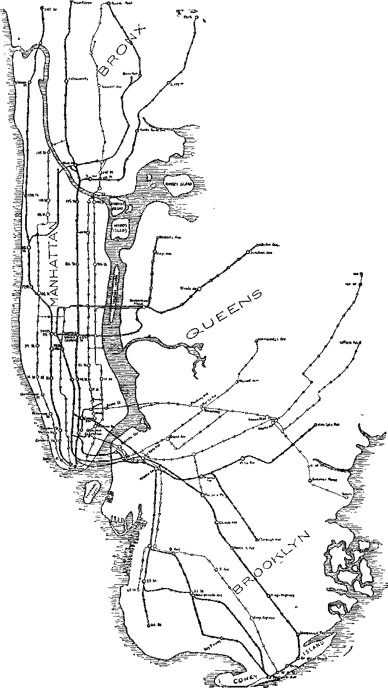
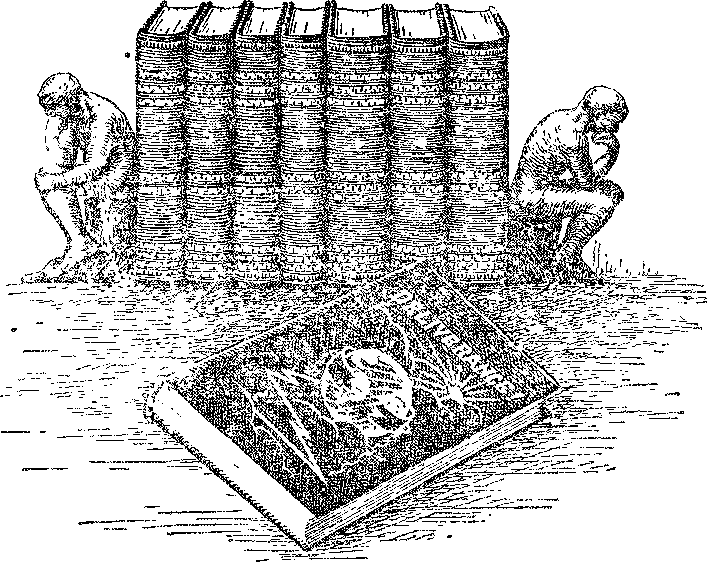

VOICES
MAN’S UNSEEN ENEMY
SHOULD CHRISTIANS
ENDORSE ZIONISM?
OLD ’WORLD DYING
UNDERGROUND
RAILWAYS
SIDELIGHTS ON CHAIN BROADCASTING
Vol. VIII Bi-Weekly No. 203
June 29, 1927
VOICES
MAN’S UNSEEN ENEMY
SHOULD CHRISTIANS
ENDORSE ZIONISM?
OLD ’WORLD DYING
UNDERGROUND
RAILWAYS
SIDELIGHTS ON CHAIN BROADCASTING
Vol. VIII Bi-Weekly No. 203
June 29, 1927
. 11 _ Y . >■ i-Ni AsAS .-
T5LU PH
NEV
WORLO BEGINNING
Labor and Economics
IIfi® and Thfbe About the World . • 611
The Eight-Hour Law for Women 611
Slaking the Babies HuWe ............... 611
Increased Wages lor Expit m Workers .......... 612
Finance—Commerce—Transportation
The World Getting Smaller .............. 611
Pen Mightier than the Sword ............. 611
The -Ford Retail Store Tangle ............. 612
The Individual Manufacturer Done For ... ..... 612
A Rapid Rise to Wealth ................ 612
New York’s Underground Railways ........... 614
London’s Underground Railways ............. 616
Political—Domestic and Foreign
A Powerful Cartoon ................. 611
“The Decline of Europe” ............... 614
The Trish Opinion of Britain .............. 614
The Sovereignty of China ............... 611
Science and Invention
Some Side-Lights on Chain Br.0Ai>cAvrixu ......... 617
Travel and Miscellany
Voices and their Inpluence .............. 019
Religion and Philosophy
Business Men Give Away Testaments .......... 613
In a Strange Business 613
“Lost Books of the Bible” Not T.o^t ........... 613
The Door of Hope Not Closed ............. 613
God not “Doing the Best He Can” ............ 613
M in’s Unseen Enemy ................. 625
Should Christians Endorse Zionism? ........... 631
Bible Questions and Answers .............. 637
Two Good Boys and Another Boy ............ 638
Little Studies for Little People ............. 639
Published every other Wednesday at 117 Adams Street, Brooklyn, N. Y., TJ. S. A,, by WOODWORTH, HEDGINGS & MARTIN
Copartners and Proprietors Address: lit Adams Stteet, Brooklyn, N. Y, U.S.A CLAYTON J. WOODWORTH . . . Editor ROBERT J. MARTIN . Business Manager WM. F. HUDG1NGS . . Sec’y and Treas.
Five Cents a Copy—$1.00 a Year Make Remittances to THE GOLDEN AGE, Notice to Subscribers: We do not, as a rule, send a card ol acknowledgment for a renewal or for a new subscription. A renewal blank (carrying notice of expiration) will be sent with the journal one mouth before the subscription expires. Change ot address, when requested, may bo expected to appear on address label within one month. Foreign Offices ; British . .... 34 Craven Terrace, Lancaster Gate, London W. Z Canadian ......... 38-40 Irwin Avenue, Toronto, Ontario Australasian ....... 495,Collins Street, Melbourne, Australia South, Africa® ...... 0 Lelie Street, Cape Town, South Africa
Entered as second-class matter at Brooklyn. N. Y.. under the Act of March 3. 1879
Volume VIH Brooklyn;, Yej Wednesday, June 29, 1927 Number 2©3
[Radiocast from Station WBBR on a wave length of 416 4 meters by the Editor.]
WITH Captain Lindbergh's 3600-raile nonstop hop from New York to Paris in thirty-three hours and twenty-nine minutes, which is about one-fourth the time required for the fastest ocean liner to cross the Atlantic, and Chamberlain’s non-stop flight to Germany, the size of the world has again been materially reduced. A few weeks before that, the British air minister and his wife made the journey from England to India, a distance of 6300 miles, in 63 hours actual flying time. Of course they made many stops, and actually spent twelve days enroute ; but their flying speed of 100 miles an hour, and Lindbergh’s average of over 107 miles an hour, presages the time when such a journey can be made in less than three days, and when New Yorkers may run to Europe for the week end, and vice versa. Lindbergh and Chamberlain each made their trips in single-engine monoplanes, while the British minister traveled in the new British biplane Hercules.
dends, but repoi ted ‘"no net income'5 to the Internal Revenue Bureau: and certain metal firms, in the same period, also paid more than $23,000,000 in cash dividends and $3,900,000 in stock dividends, yet they, too, showed “no profit”, ft is all very simple. A clever corporation lawyer told the bookkeeper how to make his marks on paper, and the rest was easy. The mod*”' i holdup is by the pen.
TVTMASSACHUSETTS has adopted an oight-1VA hour law for women, and a strenuous attempt has been made to show that the textile crises in New England were due to this fact. Now come two women, connected with the United States Department of Labor, and testify that they went to Massachusetts, interviewed 800 working women and found only one who lost her job on account of the eight-hour law, and moreover, after a little, even she got her job back.
THE Tampa ’Moining Tiibune contains a stirring cartoon by Morris. It is entitled, “The first move toward work! peace—get rid of mili-taiy conscription5'. It represents a strong, detei nined and desperate man grabbing an armed giant by the ankles and hurling him headlong into oblivion. The giant’s title is “Military Con-scrip1 ’on". The man who is pitching the giant overboard is entitled “The People”. Hurrah for the people 1
Senator Frazier of North Dakota is reported as disturbed because in 1924 certain textile firms paid more than $40,000.0°') in divi-
Making the Babies Hustle
HTUIE Freeport (Ohio) Fics’s cpoit> that in
Texas “a child five years old has picked more than two thousand pounds of cotton during the present season, his highest day’s record being about eighty pounds. Another child of five picked seventy-five pounds of cotton in a single day. This amount would be a good day’s work for an adult and the child v orked approximately sixteen hours in picking this quantity.” Texas should pass a law compelling all babies over six mouths of age to wash and dress themselves, help with the housework and do chores around the place. Then by getting them out ’ into the cotton field when they are a year old this will give the /we-year-old tikes a little chance to play.
T) resident S. 5V. Straus, of the banking firm hearing his name, has advised against the starting of any more hotels, apartment houses, apartment hotels or office buildings in the city of New York for a period of six months, on the ground that there is clanger of the city becoming over-built with this class of structure, of which about $1,000,000,000 worrh have boon built in New York every year foi the past live years.
J^MPLOYES of the American Railway Ex-pros (’ompauy have received a \ age increase of $4,500,000 per year, to he divided among the 60,000 employes. There weie two remarkable things about the granting of the increase: (1) Jt was the result of arbitration: (2) the arbitrators came to a unanimous decision. There was no lawyer on the board.
A N ITALIAN youth eighteen years of age, but over six feet high and weighing 180 pounds, became discouraged and leaped off ^lanhattan Bridge because he could get no work. He was dragged out of the water with a boathook, taken to a hospital to recuperate from the effects of his 142 foot leap, and then was given a job as orderly in the hospital where he went for repairs. The moral of this is that it pays to advertise.
IT WAS all right for .Henry Ford to produce his famous tin cans on wheels and undersell everybody in the automobile business; but when he began selling shoes to his employes at retail for less money Than the shoe merchants of Detroit could buy them at wholesale, he surely started something. Finally it was not limited to shoes, nor to his employes. Henry began selling everything to everybody. The merchants of Detroit became scared and then furious, and tried to get merchants elsewhere to boycott Henry. But Henry says Detroit merchants overcharged his employes in the past and he is only making sure they don’t do it again. Henry says, however, that he will try to inaugurate a system whereby his sales of commodities will be limited to his 80,000 employes and their families.
Merle Thorpe, editor of the Nation’s Business, in an address to the business men of Washington is reported as having said:
The individual manufacturer or business man is no longer'the fighting unit in industry. He cannot stand up under the competitive onslaughts launched by whole industries. The new older has cau«ed some old houses of business, established for a hundred rears or more, to disappear over night, while new ones spring into prominence in an equally short time. Electricity is grappling v ith ice for the control o+ the refrigeuffing industry; lumber is fighting cement, brick, stone and twenty-five other sub-muF*; oil is fighting coal for control of heating and power; silk w struggling with cotton, linen, wool and even wood: the automobile has vanquished the farm wagon and left the field ol battle strewn with the shattetod remnants of the buggy, whip. harness and other indiutiies, wbo*-e hopes went glimmering with, the displacement of the horw. The automobile industry learned a lesson from agricultural implement manufacturers and combined to build the greatest triangle in American industry today, namely, mass production, mass selling and mass credit.
Congressman Martin L. Davey, addressing a group of life insurance men, said recently:
The enormous amounts of life insurance carried by the American people, and the increasing amounts that are bought eieiy day, constitute one of the most powerful answers to the alarmi.-to who claim that America is jazz crazy. What is jazz? It is a refusal to assume responsibilities. It is a defiance of proper restraints. It is an abandonment to moial laxity and against moral obligation. Life inuuance is the antithesis of all these. It shows a willingness to accept responsibilities. It is an evidence of thrift, of self-respect. It shows restraint and self-contioL It manifests a positive recognition of moral obligations and responsibilities.
IT IS not so long back to 1902, when Samuel
Rubel began his humble work of peddling coal and ice in Brooklyn, and it is still less back to 1910, when he bought his first car of coal. Today Samuel is the head of a $25,000,000 corporation, operating fifty coal and ice stations, forty ice manufactories and thirty-five coal pockets. America is surely the land of opportunity, and it looks as if there were some opportunities left even in New York City.
IT IS announced that a copy of the Guttenberg
Bible has been purchased for $305,000. It is said that there were but twenty copies of this Bible printed, only eleven of which are now in existence. Nine of the eleven copies are said to be in America. The one just purchased will remain in Germany, the property of its German collector.
THE Business Alen’s Council of the Pocket
Testament League, Inc., has opened offices in Philadelphia. Its objective is the giving away of free copies of the New Testament. In its list of officers, consisting of a president, six vice presidents and an executive council of twenty-six members, it includes some of the most prominent business men of the city. Moreover, there is a cooperative committee of five prominent clergymen. The Council invites contributions. It explains that it can purchase 1,000 Testament for $110, and that it can give them away for $390 more. The figures are eloquent. They speak volumes. There are seven field workers engaged in the work of giving away, at 39^ per give, these books which actually cost 11^ each. If you have $500 to spare you can send it to the Council and they will undertake to purchase and give away 1,000 New Testaments for you. Anyway, we are glad to see the Testaments go out, and only hope the people for whom they are intended will road them and understand them.
TOE Hartford 'Tinies contains a two column '*• article explaining how a certain “Reverend'’ of New York City visited the great Methodist institution at Middletown, Conn., and delivered an address, the purport of which is that the idea of God should be discarded, that it is useless, and that in his church there are no jjrayers but certain things which he calls aspirations, which he composes and reads for the benefit of those whom he describes as “my people”. The man is in the wrong business. Furthermore, the title “Reverend” which he uses occurs only once in the Bible and then is applied only to God ’Almighty, the great Creator of all things, whom he repudiates.
THE so-called “"Lost Books of the Bible’’ w°re
never a part of the Bible and therefore weie never lost from it, despite their wide advertisement by certain publishers at this time. These apocryphal books have been known for ages. One of these books, called “The Gospel of the Infancy of Jesus Christ”, represents the child Jesus as destroying a playmate, causing him to wither away, because the lad lia-l wbuked him for making a clay fisl.pool on ike Sabbath—ami similar imaginations.
IN ONE of his answers to Jus radio listemrs’ inquiries, Dr. S. Parkes Cadman, president of the Federal Council of Chinches of Christ in America, said in part:
So far as the future is concerned, the men who iw acquired a settled habit of mind agturnt all icl’gio'i'. faith and expenenie, makes changes for the boiler in-crea-'ingly difficult and le«s probable. Abt far be it from me to say that the doer of hope is closed upon him iu life beiund the giaie.
So far, good; but we go the Doctor one better and declare with all our might the eternal truth of God’s Word, not only that the door of hope is not closed in life beyond the grave but that it is wide open; and we give Scripture for it. The apostle says, “We have hope toward God, that there shall be a resurrection [raising up again to perfect life], both of the just and unjust.” lie also says, “God will have all mon to be saved [out of the grave] and brought to a knowledge [epignosis—accurate knowledge] of the truth; for there is one mediator between God and men, the man Christ Jesus, who g.tvc himself a ransom [corresponding price] for all, to bi' testified in due time.”
A LUTHERAN tract has been handed us, which tells us in one breath that the death (and fate) of little children is a “mystery”, and in the next that God has been putting forth an “inexhaustible effort” to do good unto men throughout all the history of the human race. We should think that the writer would see that the two statements are in violent conflict. God has been simply waiting until man learned his lesson, and that is what is the matter with the _ world. Relief is ahead. r ’ t
N THE basis of pre-war prices there has been an actual increase of about five percent in volume of world trade since before the "World War. The United Kingdom and the United States have between them thirty percent of the world’s trade, almost equally divided. Germany and France together have as much world trade as either Britain or the United States, with Germany slightly in the lead. India, Canada, Japan, Italy, Argentina, Belgium, Australia, and China are next in order, each having from two to four percent of the ’world's trade.
TN A powerful article under this title The Na-tiou says very truthfully:
Europe is not a dead or even a dying continent, but its great day is passing. Probably never again vill it hold such a position in the world’s affairs as it did just before it set about cutting its own throat in 1914. A new world is coming into being.
EFERRING to Mr. AY. R. Hearst's proposal for a union of English-speaking nations,
The [ii.-~.li Beyublic delivers itself of some expressions about England which will awaken a responsive echo in many Irish hearts. It says: She gypped us into the World War. She tried to gyp us into the League of Nations and then into the camouflaged World Court. She is making us pay her debts by her export duty on rubber. She has rewritten our history with a poisoned pen. She has worked and twisted our government to li<r will, by methods that do not dare be shown in the light of day. She has destroyed liberty wherever she could. She is a thundering old harlot. She is unfit to associate with. She is the, world’s greatest hypocrite. She is as sinful and mean as the Devil ever could be. She is unfit and contaminating, and until such time as sho has Leon reborn into the atmosphere of Justice and Liberty no decent nation should recognize her, much less associate with her.
TN FEBRUARY, 1922, the United .States, Great Britain, France, Italy, Japan, Holland and Portugal, entered into a solemn agreement “(1) to respect the sovereignty, the independence, and the tcrriiojial and administrative integrity of China; (2) to piovide the fullest and rno-t unembarrassed opportunity to China to develop and maintain for herself an effective and stable government: (3) io use their influence for the purpose of effectually establishing and maintaining the principle of equality of opportunity for the commerce and tnchisuy of all nations throughout the territory of China; and finally, (4) to refrain f'om taking advantage of conditions in China in order to seek special rights or privileges which would abridge the rights of aubjects or citizens of friendly states, and from countenancing action inimical to the security of such state®.
It seems as though this is a good time to call these solemn promises to mind. Most of the great powers above named are at this very time making the most flagrant violations of both the letter and the spirit of all these promises.
New York’s Underground Railways
WE PRESENT herewith a map of the underground railways of New York City. New
York lias two subway systems, the Interborough and the Brooklyn-Manhattan Transit Company, also an elevated system, owned by the same companies. AVe give some of the more pertinent fads regarding the Interborough Rapid Transit System, New York’s oldest, largest and best known subway system. The figures arc authentic.
The subway system operated by the Interborough Rapid Transit Company comprises, roughly, two north and south four-track trunk lines, with several branches serving parts of four out of five boroughs in the greater city. There are approximately 78 miles of road, with approximately 257 single Hack miles.
The longest ride on this system in one direction is from New Lots Avenue, in Brooklyn, by way of the Lexington-4th Avenue subway line and its connections, to 241st Street and AVhite Plains Road, a distance of 26.13 miles. The uniform fare on the Tnterborough Subway System is five cents, regardless of the distance traveled.
The Interborough Subway operates approximately 3500 trains per day, making a car mileage of nearly 400,000 per day. During the rush hours, its express trains, each carrying ten steel cars, are scheduled at intervals of one minute
and forty-eight seconds. The motors on these trains develop from 2800 to 4000 horsepower. The rate of acceleration is 1.7 miles per hour per second, and the rate of deceleration at stations two miles per hour per second.
The Interborough Subway System for the year ending June 30, 1926, carried 784,000,000 passengers. During the same period, the Elevated lines, operated by the same company, carried 346,200,000 passengers, or a total of 1,130,000,000 passengers— more than all of the steam railroads of the country put together.
MAP OF
GREATER NEW YORK
(Surface lines, B. M. T. and Hudson Tubes not shown on this map)
showing
Interborough
Subway and Elevated Systems
Heavy lines indicate Subways Light lines indicate Elevated
«MH?S iJUMS
n o$«
on ftaMepg
IS ADO
NEW YORK is engaged in a desperate struggle to keep from falling into the hands of some one body of financiers that will control her transit facilities. Despite the fact that there are now two great competing subway systems in the city, and +hat each of these has considerable unused capacity in certain sections, and that a unification instead of a further splitting up would make for the convenience of travelers and the economy of operation, the city is now building a third subway system, the whole length of Manhattan. The evi-’dent object of this new subway is to make sure, if that is possible, that a few financiers shall not get the whole city under their control.
Aw
Loadon’s Undergrowad Railways
BY THE courtesy of the London manager of the International Bible Students Association we are favored with a beautifully gotten up hook descriptive of London's Underground Railwars. London has eight such lines. A map of the combined systems is shown herewith. The London office of the I. B. S. A,, is at Lancaster Gate, in the center of the subway system, but well to the west of the business district.
London claims for its subways an even temperature of 60° Fahrenheit, clear air, good light, a unnfoUable seat and a minimum of noise, so tnar conveisation on trains is easy and agreeable. Tiains operate at one minute intervals. Acceleration io one and one-half miles per hour per second.
lz w clauiiod that the ride from Edgware to Morden. 21% miles, is ‘“the longest tube ride in the woild”, this on the authority of the London Dally Ilci aid. The last section of this line was opened in September, 1926. The fare for the 22-mile journey is 9d, or about 18$; and from the center to either end is 6d, or 12$. The tunnel section of the Edgware-Morden tube is 14 miles; and the London companies claim it to be the longest railway tunnel in the world. There are thirty-six escalators on the system.
London is “built upon the sand”; hence in excavating the tubes it was possible to use rotary shields, which mechanically throw hack the eaith the} cut. Eighteen shafts were sunk, aw* as many sb’Ads y,ere v c’king snnultaneous-ly. In the construction cf stations the effort has been to keCi passengers mov .ig in a straight line, v honeyer possible.
The London tubes have a business connection with an omnibus company vhich operates fleets of vehicles to their exterior termini, an excellent way of building up the suburbs and paving the way for future extensions.
Some Side-Lights on Chain Broadcasting By Edgar T. Darlington
THE practice of linking a network of radio stations together, for simultaneous broadcasting from one studio, lias come very much to the fore within the last couple of years; and its growth is continuing, as gradually station after station is added, or the manufacturer or retailer of some commodity subscribes to more “space” on the air; not to mention the new chain “tie-ups’’ being announced almost weekly. All this is not now to most of you, but of how it is aecomplish-d less is known.
To the listener•oin v-ho. without even revolving then- dials, find themselves suddenly transported irom city to city, as one feature ends and another succeeds it, all in a fraction of a second, a brief non-teehnical outline concerning what goes on behind the scenes to make one of these programs possible should be of interest. Few music lovers or broadcast devotees, comfortably seated in their favorite chairs and ready for another of those enjoyable radio evenings, realize the enormity of the work and planning involved whenever two or more widely separated stations are to be linked.
Almost everyone is familiar with the programs originating in New York; as practically every night some ten to fifteen stations throughout the country are putting splendid programs on the air, in conjunction until WEAF. (It is vnth this latter mentioned network that the writer has been most closely identified, and of which he speaks.) On even the most ordinary of these out-of town programs, two and sometimes three hours are required to prepare the long distance telephone circuits and insure that they will faithfully transmit the program just as produced in the studio.
On programs of greater importance, or of national significance, from several days to several weeks are sometimes consumed in advance of the event, before the engineers are satisfied ivith the circuits’ behavior. For certain programs, which require that a second person “talk hack” to Nevr York from some other city, the engineering problems to be surmounted are doubly complicated. •
In some respects the rvire circuits are similar to the familiar, every-day “Long Distance” connection. For programs consisting principally of speeches or an address the requirements are not so exacting; as the existing facilities were originally designed for the satisfactory trans-missim of intelligible speech. ’
However, when music, particularly if of a symphonic character, is to play a prominent part in the program, superior transmission is necessary in order to cover the much wider scale of fiecpencbs and volume involved. As is well k, own, on important part of the emotional effect e~r high grade music comes from wfide volume variations.
While most of our nation's telephone traffic, e.5p., < tally A tw« on the lai^n' c-m-er.-. of population, is routed over No. 19 gauge cable circuits, jet except for such programs as where speeches ov th« desciiption of some sports event are the main feature (-he musm being but incidental), these ^mall-gauge cable circuits would be inadi quote; the chief drawback being their inherent inability to conduct frequencies much above 2,200 cycles without severe attenuation.
For this reason, No. 10 or No. 12 gauge openwire lines, as found on the fast disappearing t( lephone poles having several cross-arms, are the preferred broadcasting circuits; although it is expected that cable circuits having special "loading’’ characteristics will soon be employed.
If the telephone wires wTere to be taken directly from their normal conversational duties and made to serve as a connecting medium for blanketing the country with a high class musical program it would he found that notes above a certain pitch (or frequency of vibration), also those below some definite pitch, would be retarded more than others, and some rvould be choked or cut off entirely. Thus the radio listener would never know of their existence, while many of the notes that did reach him would have suffered great distortion.
IN ORDER to forestall any such action as above mentioned, and to be assured that the circuits are up to proper standards, the transmission engineers, prior to every program and by means of an adjustable oscillator, send out a current, or “tone”, as it is familiarly called, of say a hundred cycle frequency, over the network of circuits. This is measured at each of the radio stations that are to broadcast the program, also at intermediate points, by means of an instrament known as the Volume Indicator, and the
“lever at which it is received is reported by telegraph to the New York Control Room.
This process is repeated, at intervals of a hundred cycles, on up fo over 5,000 cycles. This covers pretty well the vocal or instrumental register anticipated. These “tones” must reach each individual station at some predetermined level, and all frequencies between 100 and 5,000 cycles should be received with almost equal strength.
If undue loss or gain is experienced at any particular frequencies, this can be corrected by means of an “attenuation equalizer” (consisting of variable resistance, capacity and inductance units), either at the radio station or somewhere along the line.
It is sometimes necessary, additionally, to alter the characteristic of these amplifiers, in order to obtain the desired equalization. That is, to materially aid in the “overall” or end-to-end equalization, certain of the various intermediate telephone amplifiers are either specially built or “doctored” to give a frequency curve with a rising characteristic, i. e., amplifying to a greater degree as the frequency scale is ascended. This is done in order to counteract the inverse characteristic of the line wires.
With the circuits properly equalized, the final “curve” at all frequencies is almost flat. Under these conditions the circuit is ready to transmit with extreme fidelity the many shades of tone produced by the artists; and thus is accounted for the fact that many imagine themselves to be present in the studio or auditorium with the artist, so true and natural is the reproduction. Various refinements are constantly being developed, and before so very long frequencies of from 50 to 10,000 cycles will be transmitted with the same ease with which voice frequencies are handled today.
The foregoing equalizing or “lining-up” procedure serves also to detect the presence of any “composite filters” or other D. C. apparatus left inadvertently in the circuit; and which would prove extremely disastrous to the ensuing program if not removed. This includes all Morse telegraph and “phantom'’ talking circuit apparatus ordinarily used in long distance circuits.
THE audio frequency amplifiers referred to are spaced at about every fifty miles along the route of the circuits, and serve to eompen-sat© for the loss in strength encountered by the delicate electrical impulses while traveling over the wires. These amplifiers are highly perfected models of engineering skill, consisting usually of two stages of transformer—or impedance-coupled amplification.
These amplifiers are practically distortionless ; that is to say, they amplify to an equal degree at all frequencies, from approximately 75 to 8,000 cycles. Were it not for these amplifiers, or “repeaters” as they are termed, telephony over any considerable territory would not be possible; by their use, distance is annihilated. The “gain”, or amplification given, is adjustable, and must be carefully measured and regulated. Too high a gain would cause overloading of the vacuum tubes during sudden hursts of volume, and create distortion. A safe margin must be observed.
While programs from distant studios are in progress, men are stationed at various points along the lines to observe the quality of the material being transmitted; and in case of an emergency they are on hand to quickly localize the disturbance and make any temporary repairs required. These men, as well as the telephone men sent to each radio station, are all interconnected by a specially assigned Morse wire which runs into the New’ York Control Boom and Studio, in order to keep those responsible for the success of the program advised of conditions.
All telephone linemen along the pole routes, ■who might ordinarily be engaged in resetting poles or making transposition changes, are ordered to cease all such hazardous work during the period of broadcasting. Likewise, work of a relatively unimportant nature on the distributing frames of the telephone offices through which the circuits pass is suspended.
When the American Telephone and Telegraph activities were taken over by the newly formed National Broadcasting Company, it was announced that the presence of a telephone company representative at the radio station would be dispensed with; the operator of the station’s broadcast transmitter taking care of the reporting of measurements, etc., direct to New York.
It may also be of interest to know that for the more important programs, such as the Presidential election returns or inauguration, Defense Day demonstration, or the World Series baseball games, duplicate circuits are main-tamed to all radio stations, each taking a widely 'different routing, perhaps through adjacent states, and the program is sent over each line simultaneously.
Thus, any storm or other unforeseen circumstance which might badly cripple all lines in one territory, would still leave the other circuit intact, and the radio audience would not be deprived of their due. Thus it is seen that, in addition to the more widely heralded responsibilities of those in charge of the studio and control room, a host of busily occupied telephone engineers and techmeal men share the burden, and contribute to the making or the marring of a successful chain broadcast program.
HE phrase, “Please stand by,” so familiar to those who listen to a network program, has aroused much curiosity, as well as some criticism; it being a hold-over from the days when spark wireless telegraphy was the only form of radio used. Those who listened to our chain programs previous to 1926 will recall that the New York announcers, every hour or halfhour, repeated a list consisting of the call letters and the owners of each radio station participating in that particular “hour”.
Nowadays, however, in order to avoid the frequent (and tiresome for the listener-in) repetition of ten or twenty station call letters, as well as to give each station more individuality, the New York announcer will interrupt a program with “Please stand by for your station announcement". This is a prearranged cue or notice to all stations that the program in the originating studio will lie suspended while each station makes its ovn brief announcement, fifteen seconds is alloted for this purpose: after which, each transmitter is again at the disposal of the Xerv York announcer. It is obvious that with this method the listener's hour will contain from, five to ten more minutes of entertainment than -was previously had. minus the annoyance of prolonged interruptions.
Voices and Their Influence By H. E, rismock
IWAS congratulating myself on the prospect of a few quiet hours on the train with a favorite study book. Ensconced in the comfort of a seat in the middle of the coach I began to plunge into that blissful trance of the confirmed bookworm. But I had not descended very far before I was abruptly bumped to the surface by the shrill chatter of two middle-aged ladies who took possession of the seat across the aisle.
Smiling at their loud, excited chatter, I ■waited for it to abate vith the starting of the train so that I could be settled again. But it didn’t. By an effort of will I tried to concentrate upon my book, to shut out their voices or at least to relegate them to the plane of noises of travel —the squeak, rattle, thump and monotonous grinding of wheels, which we get accustomed to and do not notice particularly. But in vain; these strident feminine voices rang above the rest of the racket and I was compelled to be an unwilling eavesdropper.
Thrilling? No, it was quite puerile: “She was thirty-two when she came to live hero, and that was when they rvere putting in the railroad eighteen years ago; she can’t be less than fifty. And he’s only about thirty-one! Yes, they’re going to get married. She’s a widow and worth $50,000," etc., etc., ad infinitmn.
After several minutes of this small talk had incessantly boomed into my aching ears 1 began to be somewhat peeved. Neither party vas deaf; for the more intimate details of the affairs of the couple under dissection were discussed in a whisper, for which I was truly thankful. There was no other seat to move to where I might be quiet to rea|d, so I tried to compose myself and accept the discomfort philosophically.
In England, I reflected, people travel twelve in a compartment, the seats being crosswise of the coach with six seats facing the others; yet there are frequently three or four conversations carried on by immediate partners in a full compartment, with little difficulty of “getting the vires crossed”. The quiet tones and soft burr of the British, especially of the Londoners—approximated in the mellow7 speech of the people of some of our Southern states—do not jar the ears or disturb those for whom they are not intended.
Possibly, I reflected, this custom of travel in Britain is one of the reasons why Englishmen are generally accused by their more loquacious 'American near-cousins of “mumbling” in conversation. The undemonstrative conversational tone of an ancient people accustomed to doing things quietly does not register with sufficient force on the auditory tympan of the “species Americanus”. And English ears, on the other hand, are naturally pained by the boisterous chatter of a people who are more vivacious, more youthful, and who therefore possess all the noisy exuberance of youth.
I remembered some club rooms I had visited in Chicago, where almost everyone seemed to be talking loudly and no one listening particularly, but each one waiting for his chance to shout. Then I reflected, Why be peeved at the chatter which these earnest housewives are peddling? Yet I wondered wffiy their neighbors’ affairs should be so thrilling to them; why women should talk so much anyway. Not until I tried to put myself into their household shoes, so to speak, could I understand it; and then I knew.
I pictured myself over a washtub, alone for a couple of hours at a time in a dingy basement; or sewing on many buttons for the family wardrobe, darning socks and carving out a pair of pants for Johnny as an afternoon's occupation -—alone—with the four walls as the limits of my world for most of the day; and every day about the same.
Yes, I reflected, I think I would let off a little steam too, and on almost any subject under the sun, when I got c <e of those rare opportunities for a holiday and for conversation with a kindred spirit. And why not converse about human beings? Humanity is certainly the most fascinating study on earth, especially if one can do it charitably and shut the other eye once in a while.
Having finally entered into the spirit of the two housewives engaged in the (to them) absorbing and relatively harmless diversion of gossiping, I found myself entirely over my “peeve”; and, quite unconsciously, I actually favored than with a benignant smile, which Beemed to mystify one of them who happened to see it. Thereafter their chatter disturbed me much less.
AND sitting there I began to philosophize on other voices that had been impressed upon my memory, voices in general—those in happiness, in grief, in love, in anger; some singing, some weeping; some greeting life, some bidding farewell; voices, too, of multitudes, in exultation, in fear or in anger; voices, countless voices, no two alike; and the impression I had received of them, obtained over the varying range of lime, circumstances and conditions, the most striking ones readily yielding up to a contrasting one, but each having a lesson full of human interest. 1 .et me tell you about some of them:
Recent I]', 1 was at the home of some Bible Students—“truth” people—where I had enjoyed a day’s hospitality on my lecture route. The voices of the children in the home still ring in my ears. I thought of the confident little note in the voice of one little miss who smilingly told me that she “knew the truth” and was “a restitution girl”.
I remember hundreds of other little voices that have expressed the same sentiments at homes where I have been entertained—the children of Bible Students. One little girl in Pennsylvania said she was going to “ride on the back of a lion in the Millennium’’. And I remember her happy laughter as she spoke confidently and intelligently of the great blessings in store for mankind.
Another youthful voice contrasts sharply— that of a young man who pressed numerous religious papers upon me when he saw me reading a Scriptural Study book. In a strained hard voice lie inquired, “Are you saved?” Smilingly I told him that by the grace of God I believe on Jesus and therefore have passed from death unto life, and that I am rejoicing in the prospect of being a member of the “bride” who with Jesus shall give all humanity the opportunity of gaining life everlasting.
He looked at the title of my book, and then in a rasping cry exclaimed, “You are a ‘Russellite’, and are on the sure road to an eternity of torture in the flames of hell!” The brief conversation that followed was almost a monologue, because of his constant and vehement denunciation of the doctrine of restoration. (Acts 3:1924) I tried in vain to point out the Bible texts that show Jehovah to be a God of love, with a plan of redemption from death for all humanity willing to accept it in the ^Millennium. The religious hysteria of my contradictor saddened me.
WHAT a terrible responsiblity rests upon those who, as religious teachers, had so poisoned the mind of this poor boy with the “doctrine of devils”? How many sober-minded people of good-will, I wonder, have been turned away from entering into Bible study, through believing that the fanaticism of the “hell fire ^ereoehers” represents the spirit of the Book! How many atheists, infidels and agnostics have been made such by the rank nonsense that is ladled out as mental and spiritual food by the false prophets of Christendom !
How could one have the voice of a true prophet if the true spirit of God is lacking? The majority of the prophets of “Babylon the Great” have prostituted their profession as ministers of the truth, in linking up with the mighty men of this evil order. Irrevocably joined in harlotry with the “kings” of the earth, their voices are not raised to warn of impending Armageddon, nor to “comfort those that mourn” by pointing to the dawning of the golden age; but are raised in support of the last scheme of the Devil to perpetuate the old order of things that has brought the terrible nightmare of 1914 onwards —the League of Nations. This last Tower of Babel erected to mock God shall suffer the same fate as its predecessor, and its arrogant Babylonish spokesmen shall be confounded.
I recall the voices of some of these preachers whom I have met at their own doorstep. As 1 told them of the incoming kingdom for the deliverance of mankind I have seen the frozen expression that came over their ecclesiastical visages and heard the angry tones of professional jealousy in their reply—the cast-iron vulcanized mind rejecting a patent truth that threatens their long-hallowed errors.
I remember well the voice of one clergyman in a New Jersey town who was a better actor than minister. 1 recall his harrowing yarns about “death-bed repentance” and “visions” which he spun with alacrity to try to persuade me to forsake the truths that I had dearly won regarding God’s benevolent plan, which dissuasion, however, only filled my heart and mind with a greater desire to give, to allwho willhear, the good news of the incoming kingdom. No wonder “religion” has become odious to many intelligent people who have the interest of their fellows at heart—with such prophets as these to ‘‘muddy the waters” of truth. The memory of these “ecclesiastical” voices is like the lingering perfume of the dreaded pole-cat.
A ND then another voice I vividly recall—that of a young socialist spellbinder on a street corner in London, whom I would listen to occasionally a few years ago as I sought knowledge of the solution to world problems, the ivmedy for world distress. Fearlessly, passionately, and with 'voice ringing with a realization of the injustice to his fellow men, he thundered his de-nunciatioiwf the rulers who had stampeded the masses into w ar.
The previous evening a war munitions factory had exploded in the East End of London, spreading a sea of flame over a square mile of humble homes. His voice mounted to a shriek as he spoke of this “cannon-fodder”. It was after he had dwelt at some length on the general sufferings of the common people in the execution of the schemes of the imperialists that he referred to this catastrophe of the previous night. Then, like one driven frantic with rage, he shouted defiantly and dramatically, “They don’t build powder magazines near Buckingham Palace!”
Earnest and sincere 1 Of course! I often think of that speaker who, with a zeal not according to knowledge, was giving his life for the cause of the underdog. How such voices will be raised in thanksgiving and praise when they see God’s approaching deliverance manifest for the human race, deliverance from war and oppression, deliverance from all evil that has been suffered by God Himself that man might have a practical object lesson on the necessity for righteousness! It makes us long for the establishment of that new civilization world-wide, which will more than fulfil the most idealistic dreams of the socialists; when not alone shall an ideal form of human society obtain, but a great progressive movement of restoration shall lead the race, including the resurrected billions, back to Adamic perfection and fellowship with God.
THE voice of a multitude in a shout of triumph over the destruction of their enemies is not easily forgotten. Several times in London during the World War I saw attacking zeppelins falling in tremendous sheets of flame, the doomed crews incinerated in a few seconds. And the crowds in the streets then yelled themselves hoarse at the destruction of their ‘•enemies'’. Poor blinded people! Soon they will learn (by the millions they are learning it even now) that their greatest enemy is not a people of foreign tongue, but Satan, who has been “the god of this world”, blinding the minds of the people and using his dupes to control them with false standards, philosophies and religions.—2 Corinthians 4:4.
And v ho does not remember the voice of the multitude on Armistice day! Relief that the nightmare had ended, and hope for a future of blessed peace, compelled spontaneous shouts of joy on all sides—for had they not been promised a new and better world for their bloody sweat and sacrifice? The leaders had promised reconstruction, with militarism for ever abolished, freedom from armament, taxation and the evils that had brought about the war.
It was less than two years later that I listened to the angry cries from the ranks of an army of union workers, scores of thousands strong, who marched in impressive discipline through the streets of London to a “Red” rally in Hyde Park on May Day. “Where are the fruits of our bloody sacrifice?” they demanded. “The Versailles peace treaty simply means another war soon!” Then they held up ragged little tots to view™-war orphans—and cried in savage earnestness, “Have the fathers of these poor kids died in vain?” These v ere rumblings of a mighty storm yet. to break.
A young boy who had lifted his voice in religious fervor in ‘ ,e singing of the “Red Flag” one day in Trafalgar Square, London, in unison with, thousands of radicals, later came to a knowledge of the divine plan for rescuing man from Iris extremity, the abolition of all systems of oppression, the dethronement of the swashbuckling war lords and the establishment of a righteous government of “princes in all the earth”—ptinces, real princes; not the bloatedeyed “princes” of “royal” blood whom we now know, who live dissolute, useless lives, like parasites on human society; but true “he-men” of the ripe of Abraham, Moses, David and Daniel; the “ancient worthies” who the Psalmist says shall rule as the visible representatives of the Messiah.
The millions now living who pass through this transition period into the Millennium and who seek meekness and righteousness, will live to'be thrilled by the voices of these faithful men of old who shall speak with authority in the real reconstruction, as spokesmen for the great Prince of Peace. Then the earth shall be full of praise to God from the throats of all mankind.
ONE can always recall with a happy emotion the memory of the singing of multitudes of true Christians in convention. The unity of mind, the simple fervor with which are sung such old hymns as “Abide with Me”; “Lead, Kindly Light"; “Onward, Christian Soldiers"; “Hail to the Lord’s Anointed”; etc., etc., impress the .memory and inspire one to press forward in the cause of truth, much as does the appeal of a great religious oration.
But not all religious singing makes this appeal. I remember hearing a large congregation singing in a great cathedral. The voices rang crystal clear and filled the great vaulted dome with their melody........voices superb, fault
less in musical technique—and yet the rendering was lacking in that warmth and inspiration which come only from the heart of the true worshiper of God.
Then I have attended other religious meetings —some which have been held in the “backwoods”, where the men are horny-handed and have faces weather-stained, where the women are care-worn with life’s struggles, and where none can read music nor are they accustomed to even hearing faultless singing. Yet vlien they join their hearts in a simple hymn of praise, notwithstanding their rough and unblending voices, I am stirred in my own heart and am reminded of the unlearned fishermen back therj who sang a song with Him before they “went out” from the upper room, which must, have comforted the Master in His final hours.
There is a certain building in Brooklyn, N. Y., that is very dear to all Christians who are interested in the sending forth of the message of comfort for the people—Bethel, where the voices of nearly two hundred Christians are raised in singing sacred hymns every morning before going to labor in the production of I. B. S. A. literature, including The Golden Age. People passing outside pause to listen. One morning a conversation had with the Irish policeman (nearly all New York policemen are Hibernians) who has his beat in that neighborhood disclosed that he makes it a point always to he around outside of Bethel when the singing begins. That morning he became the proud possessor of a Bible study hook with an Irish green binding, Erin's symbol, and a Harp on 1 he cover, which we hope he will some day learn to play.
Patriotism
WE ARE all familiar with the voice of the “patriotic” orator, with his high-sounding adjectives and his sonorous, pariot-fike, timeworn political phrases. The overplay on national pride, the gallery appeal, the challenge to all comers to tear the superiority of the brawn and guns of “this glorious nation”, etc., are the .same in every land.
The repeated extolTugs of the superiority of “our institutions”, and of the ideals of "our country” and its "standard to the world” eon-f-tilute the politicians' stock in trade. I could well conceive of an Eskimo or a Bashi Bazouk declaiming in flowery language on the "glorious history” of their race and their duty to continue to lead, with the sword if necessary, in the vanguard of human progress; but in the face of recent degrading history made by "civilization” it seems somewhat out of place for the war-wrecked nations of “Christendom” to do such boasting.
Of course in times that call for the voice of strong- mon. men that cannot he bought, there arise men who can look Hie Devil in the eye and blast him with the courage of a lion : men who in trumpet tones rally the masses to the defense of what little liberty they have had the courage to gain. The orations of the leaders of the peoplein the cause of right in such times as the Reformation, the American Revolutionary War rod the Slavery Abolition War are notable examples of this. A sense of great injustice invariably produces orators adequate to the public necessity. Ireland, suffering under centuries of oppression, has produced some of the most fearless voices in history.
But m reading over the names and histories of the orators in the halls of fame of the various countries, one realizes how that marrow national pride, “patriotism” so-called, definitely limited rather than enlarged their sphere of usefulness to humanity in general. How much more some might have done to help their fellow -men had their voices been raised not for the cause of one country hut for the cause of all mankind! The true orator should not be bound by the thongs of “national superiority”, hut his spirit should be free and at the service of the entire race.
An unflinching condemnation of war, armament and oppression, and an interest in foreign people, will surely make one an outcast and a “uro-erminy” in the hysterical days of war time; yet the true orator should be ready to starve or be shot at dawn rather than sandbag his conscience to gain “nonular” approval.
THE task of endeavoring’ to inspire the “apathetic throng” is often a thankless one. But one who trusts not in human wisdom or structures, and who in this time of national change and confusion faithfully delivers the message of the Bible to this generation, such a one has the most thrilling anti inspiring subject that any man who really has the interest of his fellow creatures at heart could wish for—the Lord's incoming kingdom!
I was privileged to sit behind such a one on the platform at the Royal Albert Hall in London last year, when the lecture “Why World Powers are Tottering—the Remedy” was delivered by Judge Rutherford. In plain language, as reported in The Gowen Age, the speaker showed from the Scriptures and from the well-known physical facts that the world powers have rejected Christ’s kingdom and therefore are approaching destruction in the impending Armageddon. In thunderous tones the speaker gave the proofs of this. They will bear re-printing:
Jews taught that He v ould return and set up the Kingdom of Jehovah. For nineteen centuries His faithful followers have anxiously vsited for that time to come. Before Jesus departed from the earth the question vas propounded to Him by His faithful disciples: “When shall these things come to pass, and what shall the proof of thy presence be. and of the end of the world t ’ (Matthew- 21:4) The Lord Jesus, as the mouthpiece of Jehovah God, speaking prophetically'and with authority, answered that the time would be marked by the fact that the nations and kingdoms of the earih would become angry, and that then there would be a gieat world war. followed shortly by famines, pestilences, earthquakes, and revolutions; and that these things v. ould be the beginning of sorrows upon the nations and kingdoms of the earth.—Matthew 24: 7-18; Revelation 11: 17,18.-
In 1914, exactly the due time as foretold by the prophet of God. this great trouble began upon the nations and kingdoms of Christendom. The Lord God there furnished. to the governing powers of the earth particularly, the evidence that the world had ended, and that the time for the beginning of His kingdom of righteousness had. arrived. The ecclesiastical dement of the world powers uere dutv-hound to take notice of this evidence, and to call it to the attention of their allies, the commercial and pol,local elements. . . .
All of the-e v.mid po"CT- are indict’d by Jehovah in His Word, and each one of them i< designated by the Lord (Jed under the symbol of “bea-t”. (Daniel 7: 3) The evident rea-on for this is that all of the-e world powers have been harsh, ferocious and oppressive. The eomim Trial clement is cold, taleu'al ing. military and harsh. The political element is suave, diplomatic and faithless. The rdigiou- element is and always has been sanctimonious, hypocritical, fraudulent and seductive. All of thes.> reflect the disposition of their invisible ruler, Satan the Devil. In keeping with divine prophecy, these world powers have even designated themselves under the symbol of ‘‘beast”. The British Empire has adopted the lion as its symbol.
I held my breath and glanced over the thousands packing the great auditorium. Would the ecclesiastical element let that pass unchallenged ? A few moments later the voice of the speaker boomed out again with a declaration that made many besides myself gasp for breath:
Because Britain is the greatest of all world powers, because she together with her allies claims to be “Christendom” and to be ruling by divine right and authority, there re.-ts upon the British Empire a grave mspon-sibilifv which cannot be evaded. Became the British world powei is the ry center and bulwark of the world’s civilization, nhuh the Lord symbolizes as a “beast’’, and because London is its seat of government, and these governing factors claim to rule by divine right, here then is the very “seat of the beast”.
Wliov, ’ How would the Britishers take that? I knew the temper of British audiences, knew that with a "fair play instinct” they would rather have the slam of a friend than the praise of an enemy. But this—! And in the tense moments that followed I remembered the opening remarks of the speaker, that the rulers, particularly the religious element, were estopped from denying the Book they claim as their authority, when it shows their guilt.
If any clergyman present had felt scared into challenging such a bold declaration he must have been scared still more into silence by the thunderous applause that greeted these statements. There wasn’t a “peep” from anyone in opposition. The speakemthen spoke of the divine government for all mankind and the blessings it will bring:
No more shall the people be afflicted with war, nor be burdened will'. taxation for the preparation for war, nor Juill they even have fear of such. . . . Under the present v>orkl pov. its a few people have an abundance, many inust skimp in order to cat and be clothed, while, many olhe.. ice object- of charily. Such will not be the cond’Hons under God’s anoint’d King, whom He has now placed upon His throne. In this kingdom “shall the Lord of Hosts make unto all people a feast of fat things”. (I-aiah 23:6) Every man then will enjoy the fruits of has labor and dwell .iu happiness with those whom he loves. . . .
With a righteous government functioning for man’s good; with lasting peace on earth and good will toward men; with all the people enjoying health, and with no fear of sickness and death; with all families being united together and dwelling in peace, the human, race will enjoy eternal happiness.
Let the kings and rulers of the earth now give their allegiance, and devotion to the Lord. Let them acknowledge Jehovah as God, and Christ Jesus as His anointed King; and thus doing they will render a real service to the people and put themselves in line for the eternal blessings of Jehovah.
Thank God for a voice like that in these times 1 One can sit for hours entranced with the beautiful voice of a singer, or be thrilled again and again with the noble sentiments of a true orator, but the most beautiful of all these is but the promise of what all the voices of perfect humanity will lie like at the close of the Millennium. With restoration to all will come the gifts that are now enjoyed by a few—the arts of beautiful painting, sculpture, dancing; and the two that best express the immediate fervor of the soul—singing and oratory. Does the reader remember the closing paragraph of Judge Rutherford’s book, Deliverance?
It is a perfect day, and everything of creation bears the mark of perfection. Wafted over the valley come the strong, clear, sweet notes of a silver trumpet. At its call the great multitude kneel in silent thanksgiving to God. Another sound of the silver trumpet and there are heard the perfect voices of multitudes, and now in complete harmony they are singing: “DELIVERANCE IS COMPLETE; PRAISE GOD!”
Man’s Unseen Enemy
I Radiocast from Station WBBR on a wave length of 416.4 meters by Judge Rutherford.]
THE Bible discloses that man has been on earth for upwards of sixty centuries. The road that he has traveled has been a rough one. He has suffered from wars, famines, pestilence, sickness, affliction, and many other evils. One class of men have gone into a n?w land and there builded themselves homes and reared families and for a lime dwelt in peace, only to have another band of mon come and destroy their homes and carry av. ay into captivity the surviving, ones. Countless efforts to establish a righteous government have met with failure.
From time to tinw a few good men have launched reforms with the earnest desire to better the condition of the people in general. For some time their efforts met with a measure of success, hut ere long the reformation died and conditions became even worse. Every man v.ho has tried to do good has been misrepresented and persecuted by someone else and has usually met an untimely death. Fraud, deception, theft, arson, robbery and murder have been freely resorted to in opposition to efforts of good.
When one mail has discovered something beneficial to the people and attempted to put it in operation other selfish ones have wrongfully gotten control of such invention or discovery and used it for their own selfish gain.
Politicians of all nations have fought vvitli each other as to who should hold the offices ami feed at the public trough., regardless of what was beneficial for the people. Doctors fight as ’to who should take advantage of the ill health of mankind, in order to reap a personal reward or gain. Financiers devise all kinds of wicked schemes to take away from the producers of wealth the fiuits of their labors.
The clergy, villi pious face and honeyed words, claim to teach the truth; yet they deliberately resort to fraud and deception in order to reap personal gain. In fact it seems that almost every man’s hand is against his neighbor, and almost every man is for himself.
The Bible discloses that men of all nations sprang from one common source. Why should not all men be working together for each other’s good and for the common welfare? Why is there so much wickedness, fraud and crime, resulting in sorrow and distress?
THE true answer to the above question is that there is a great enemy of man, who opposes everything that tends to goodness. That enemy is unseen. He employs many other agencies to carry out his wicked purposes. Some of these agencies he uses even without their knowledge. He Is sly, subtle and cunning, and induces the people to believe that he does not even exist.
It is to the interest of all good people to learn about tins enemv and Iris methods of operation, and then they should diligently avoid him and follow the nay of good. You wonder from v.hence this enemy came, who made him, and how it lias been possible that lie has been an enemy of the human race for all these centuries and still continues as such. During a course of lectures from this station I hope to be able to help many to understand this matter and to aid you in taking a course that will result beneficially. All the things v>hich I shall disclose I find in the Bible, God’s Word of Truth.
Why is there so much distress and perplexity in the world ? Why are the nations so desperately preparing for war? Why is there so much selfishness among men? Why do pion manipulate file prices of the food and raiment of the people and profiteer therein?
Every perfect creature must be a free moral agent. The creature must have the liberty to exercise his power for good or evil as he may choose. In no other way could he be tested and proven. God could have made all of His creatures so that they could not do evil; but had He done so that would have prevented them from exercising freely their attributes, and God would thereby preclude Himself from testing and proving His creatures.
The heart is the seat of affection or motive. It is that faculty of the being which induces action. If impurity enters the heart impurity of action is almost certain to follow. Hence it is written: “Keep thy heart -with all diligence; for out of it are the issues of life.”—-Proverbs 4:23.
Love is one of the divine attributes. Love is the perfect expression of unselfishness. Selfishness, the very antithesis of love, begins in the secret intent of the heart. Selfishness expels love. With love gone the heart becomes malicious. The creature possessing a malicious heart is one who is extremely selfish, having no regard J“or duty or obligation to others, and is fatally bent on accomplishing his purposes regardless ol* what wrong may result to others.
sas
The glory and beauty of the heavenly creatures, the perfection of the human pair in their Eden home, and the power and authority of man to lill the earth with his kind, furnish the opportunity for exercising either selfishness or love. The test came, and some of the mighty creatures of heaven fell wider the test. The joy of heaven and earth was turned into great woe.
HE tragedy of Eden Las never known a parallel. In fact all other crimes and tragedies may be traced to the one there committed. Its enormity is enhanced by reason of the intelligence and greatness of the perpetrator of the crime and of Iris confidential relationship to the Eternal Cieator. That terrible crime blighted the hopes of men and angels, filled the earth v ith woe and caused the very heavens to weep. It started the wheels of evil and has caused them to roll on down through the corridors of the ages, spreading war, murder, disease, pestilence and famine, thus crushing out the lifeblood of countless millions.
So powerful, deceptive and cunning has been that arch criminal that the sensibilities of mankind have been stunned and benumbed, and the people for centuries have been kept in ignorance of the cause and its far-reaching effects. But now it seems certain that the time has come for God to pull back the curtain and let man have a better view and understanding of the terrible criminal and of his crime, that men may flee from the inthience of the wicked one and find refuge in the arms of the Savior of the world.
Jehovah was man’s Benefactor and Friend. Ue had created Adam, given him a wife, provided him with a beautiful home, made him monarch o' all he surveyed, clothed him with power to fill the planet with a perfect race of people, to subdue the earth, and rule it. Naturally Adam vrould love God. In addition to that, he was so created that he would instinctively 'worship the One who was his Friend and Provider.
The will of God is His law. When that will is expressed toward man it is the law of God by which, man is to be governed. A refusal to obey God’s law makes the creature a disloyal subject. Without law there could be no way of testing man’s loyalty. There must he a rule of action, commanding that which is right and prohibiting that which is wrong. God provided a law for man. It was in connection with the food of Adam that God expressed His will or command. No evil effects would of course result merely from the food, because a LI the food was perfect: but the evil result would be from the act of disobedience of God’s law.
The loss of life to man meant the loss of everything. God could not peimit a lawless creature to possess eternal bfe. Ue provided man’s food, and in connection therewith said: “'And the Lord God commanded the man, saying, Of evei y tree of the garden thou may^st freely eat; but of the bee of the knowledge of good and evil, thou shalt not eat of it: for in the day that thou eate-d thereof thou shalt surely die.’’ —Genesis 2:16,17.
It was in keeping with God’s loving provision for man to appoint an overseer or helper or protector, w’ho would aid man in avoiding the doing of that which was wrong and which would bring upon him the penalty for the violation of God’s lave It was the bright shining one, Lucifer, whom God selected and placed in Eden as overlord or protector of man. Concerning him and Ins appointment to this responsible office God said: “Thou art the anointed cherub that covereth; and I have set thee so.”—Ezek. 28 : 14.
Anointed cherub means that Lueder, the cherub, was clothed with power and authority in the name of God to do certain things, and in this instance he was clothed with power and authority as overlord in the “garden of God”, to look after the interest of man and to keep him in the right way. Cherub means an officer or deputy to whom are delegated certain heavenly powers and duties. The word ‘'covereth” means to screen, to shield, To protect.
It therefore follovrs that Lucifer w’as’clothed with peuver and authority to act as an overseer for man; to screen, to shield and protect him from taking the wrongful course of violating God’s law. It was his solemn duty, both to man and to God, to direct and influence humanity to go in the right way, that man might thereby, honor God and prolong his life on the earth.
God had also clothed Lucifer with the power of death. (Hebrews 2:14) It was therefore a part of the official duty of Lucifer to put to death the man if he did. violate God’s law. For this reason Lucifer occupied a confidential or fiduciary relationship toward God and man. There was committed into his hands a sacred trust of keeping God’s newly instituted government on earth in a pure and proper condition. To betray that trust in order that he might overturn God’s appointed means of government in Eden would be an act of treason.
The perpetration of tlm crime of treason under such conditions would cover the perpetrator with perfidy and make him a nefarious, despicable creature and the blackest of all criminals. Clothed with the most honorable position in the universe aside from that of the Logos, even different from the Logos because placed as overlord and protector of a domain, the betrayal of that tins! is so terrible that it could not be properly stated in human phrase. The beauty, the purity and innocence of the perfect man and perfect v oman, in an environment far more beautiful than any human eye has ever seen since, makes more pronounced the depravity of the heart that could commit the terrible crime hereinafter described.
Being one of the “Morning Stars” who witnessed the creation of man and of his perfect home, and being appointed to the position of trust and confidence as man's overlord, Lucifer of course knew that God had enpowered man to produce his own species, and that in due time the earth would be filled with a perfect race of people. He knew that man was so created that he must worship his Benefactor. He knew that to accomplish his wicked purpose he must destroy in the mind of man the thought that God is his Benefactor. Lucifer became ambitious to control the human race and to receive the worship to which God was justly entitled.
UC1 F’ER was impressed with his ov n beauty and importance and power and forgot that he owed an obligation to his Creator. Selfishness entered his heart. His motive was wrong and his heart became malignant. He was moved to take action concerning Adam, and his motive wa's wicked. Concerning this evil purpose the prophet records of Lucifer: “For thou hast said in thine heart, I will ascend into heaven, [ will exalt my throne above the stars of God: I will sit also upon the mount of the congregation, in the side of the north: I will ascend above the heights of the clouds; 1 will be like the Most High.” (Isaiah 14:13,1.4) The Scriptures clearly show that Lucifer’s process of reasoning was like this:
“I am overlord of man in Eden. I have the power to put man to death, but even though man violates God’s law I will not exercise that power. I will induce man to believe that God is not his Friend and Benefactor but in truth and in fact is deceiving man. Besides this, God will not be able to put man to death and at the same time maintain His own consistency; because He lias declared that that tree in the midst of Eden is the tree of life, and to eat of tfiat tree means that one will live for ever. I will therefore take man to that tree and direct him to eat, and then he will not die but will live for over.
“But before I do that I will first induce Adam to believe that God is keeping him in ignorance and withholding from him the things that he is justly entitled to receive. Adam desires his wife. I will first induce Eve to do my bidding, and then through her I will be able to control Adam. I will so throw the circumstances around Adam that he, too, will be induced to eat of the forbidden tree of knowledge, and then 1 will refuse to put either of them to death. Then I will immediately take them to the tree of life and have them eat of that fruit. Then they will live for ever and not die. By this means I will win them over to me and 1 will keep them alive for ever. J will defy God; and while He has a realm of angels and other creatures of heaven that worship Him, I v ill be like the Most High and will be worshiped, even as God is worshiped.”
The Scriptures show that thus did Lucifer plan a rebellion. It was a cunning scheme that Lucifer thus devised; he thought it was a wise scheme. Evidently God knew about it from its inception, but He did not interfere until Lucifer had gone to the point of committing the overt act by overreaching man and inducing him to sin. Concerning this God said : “Thine heart was lifted up because of thy beauty, thou hast corrupted thy wisdom bv reason of thy brightness.” —Ezekiel'28:17. ' '
This selfish meditation in the heart of Lucifer was the beginning of iniquity in him. Up to that time he had been perfect. Of him God said: “Thou wast perfect in thy ways from the day that thou wast created, till iniquity was found in thee.” (Ezekiel 28:15) The imperfection of Lucifer dates from that moment. That was the beginning of rebellion. That selfish meditation in his heart led to the terrible crime of treason and all the baneful effects that have followed since.
UCTEF.il, having eirefully planned his crime, now proceeds to carry it out. To do sc he resorts to fraud, deception and lying. When the Lopes was on the earth He stated that LuLicr ‘‘is a bar <• nd the father of it'’ (John 8: 44). thereby shoving that Lucifer gave utrer-I’.elo the first lie that wrw ever told. That b° is. 'There is no death’; and the emissaries of tin' evil one have1 been tolling that lie to the people ever since. From that lie comes the false doctrine of the immortality of all souls and of the eternal torture of the wicked.
Lucifer employed the serpent to carry out his sclieme, because the serpent was mare subtle than any other beast of the field which the Lord God had made. Lucifer therefore spoke to Eve through the serpent and said: “Yea, hath God said, Ye shall not eat of every tree of the garden'? And the woman said unto the serpent, We may eat of the fruit of the trees of the garden: hut of the fruit of the tree which is in the midst of the garden, God hath said, Ye shall not eat of it, neither shall ye touch it, lest ye die.
“And tlm serpent said unto the woman, Ye shall not surely die: for God doth know that in the day ye eat thereof, then your eyes shall be opened, and ye shall be as gods, knowing good and evil. And when the woman saw that the tree was good for food, and that it ‘was pleasant to tire eyes, and a tree to be desired to make one vise, she took W the fruit thereof, and did eat, and gave also unto her husband with her; and he did eat.’’—Genesis 3:1-6.
God had given His word that this tree produced a fruit Pat would increa.se the knowledge of those who ate it. The result was that when Adam and Eve did eat tin's forbidden fruit their knowledge was increased, in harmony with God’s announced law. They were now conscious of the fact that they had done wrong, because they hid themselves amongst the trees in the garden from the presence of the Lord. God brought them before Him. They entered a plea of guilty, confessing that they had done wrong; and thereupon God entered against them the following judgment, to wit:
“Unto the woman he said, I will greatly multiply thy sorrow and thy conception; in sorrow thou shall bring forth children; and thy desire shall be to thy husband, and lie shall rule over thee. And unto Adam he said, Because thou hast nearkeneci unto tire voice of thy wife, and hast eaten of the tree of which I commanded thee, saying, Thou shall not eat of it: cursed is Ilie ground for tliy sake; in sorrow shalt thou eat of it all (he days of thy life; thorns also and shall it bring forth to thee: and thou shalt eat the herb of the field; in the sweat of thy face shalt thou eat bread, till thou return rmlo the Ground; for ou+ of it wast thou taken: for dust thou art, and unto dust shalt thou return.”—Genesis 3:16-19.
The Scriptures mention three classes of fruit-bearing trees in the garden of Eden, to wit: (a) every tiee that is pleasant to the sight and good for food; (b) the tree of life in the midst of the garden; and (c) the tree of knowledge of good and evil. (Genesis 2:9) God told .Adam that he might eat of all the trees that were good for him. “And the Lord God took the man, and put him into the garden of Eden to dress it and to keep it. And the Lord God commanded the man, saying. Of every tree of the garden thou mayest freely eat; but of the tree of the knowledge of good and evil, thou shalt not eat of it; for in the day that thou eatest thereof thou shalt surely die.”—Genesis 2:15-17.
There is no evidence that Adam, prior to Eve’s temptation, knew anything about the tree of life that was in the midst of Eden. On the contrary he must have been ignorant of it, because there was no specific command given to him concerning it. Lucifer as the officer in charge, being clothed with the power of death and entrusted with the high office of overlord of man, would of course know all about the tree of life. The fact that God gave Adam command about other trees in the garden and said nothing about the tree of life is evidence that man knew nothing about this tree.
The eating of the tree of knowledge of good and evil doubtless would open the way so that Adam would shortly know about the tree of life. But now comes the proof showing conclusively that Adam had had no opportunity to eat of the tree of life and that therefore he must have been in ignorance of it until immediately before his expulsion from Eden.
God summoned the guilty parties before Him and, upon a full hearing of the facts, pronounced judgment against the woman and against the man and against the serpent which Satan had employed to deceive Eve. The final judgment against Lucifer or Satan is set forth in the prophecy of Ezekiel, and it provides that in due time he is to be destroyed, and never shall be again.
Immediately following the pronouncement of the judgment against man God addressed some one then and there present, and it seems almost certain that lie was speaking to the Logos, His true and trusted Son. This is what He said: “And the Lord God said, Behold, the man is become as one of us, to know good and evil: and now, lest he put forth his hand, and take also of the ti ee of life, and eat, and lire for ever” (Genesis 3:22) Mark the words of Jehovah here recorded: “Man is become as one of us, to know good and evil.”
Knowing the situation was critical God seemingly acted immediately, before man had an opportunity to get to the tree of life and eat of it, and even before Lucifer had time to inform man of the location of the tree. The words addressed to the Logos were cut short; the sentence seemingly stops in the middle without being finished, to wit: “And now, lest he put forth his hand, and take also of the tree of life, and eat, and live for ever—.” Note the record.
OD did not speak another wmrd, but acted immediately; and His action is recorded in the next verse, which reads: “Therefore the Lord God sent him forth from the garden of Eden to till the ground from whence he was taken. So he drove out the man: and he placed at the east of the garden of Eden, cherubims, and a flaming sword vhich turned every way, to keep the way of the tree of life.”—Genesis 3:23, 24.
It was doubtless God’s purpose to permit man at some future time to partake of the tree of life and live for ever, and had he proven faithful under the test that would have been his reward. Lucifer therefore caused him to fail in the test, caused him to fail to get life, and caused him to bring upon himself and all of his progeny the great sorrow and distress that have afflicted humankind down through the centuries.
Lucifer had manifested his unfaithfulness and. treachery, and doubtless intended to act as quickly as possible and lead man to the tree of life and let him. eat of that fruit and outwit God.
He knew that God had given His word that the fruit of that tree was a fruit of life, and that if man should eat of it he would live and not die. Lucifer therefore reasoned that he would be able to prove to Adam and Eve that God was purposely deceiving them and keeping them in ignorance and keeping tlumi away from the opportunity for life; and. that he, Lucifer, was telling them the titith and was bringing them a great blessing, and that henceforth he was entitled to be worshiped by them and by all of their offspring.
Had Adam eaten of that fruit of the tree of life immediately ho could not have been put to death by Jehovah Himself, because God cannot be inconsistent. God had given His word that this is a tree of life; and for Him to permit man to eat of it and then put him to death would make void His word, which is impossible for God to do.—Psalm 138: 2; Isaiah 46:11; 55:11.
Therefore in order that God might keep His word inviolate and enforce His judgment against Adam He immediately expelled him from Eden and set a powerful officer on guard, with a flaming sword turning in every direction, to keep man out of Eden and away from the tree of life.
Why did not God kill Lucifer at that time! Other scriptures show that it was and i s the purpose of God that all His intelligent creatures shall observe and learn the evil effects of sin, and that Lucifer and his sin will serve as a means of testing other creatures. In due time every intelligent creature of God -will have an opportunity under full and fair conditions to follow the course of Lucifer and take the consequences, or to follow the righteous commands of God and receive the reward of being permitted to partake of the tree of life and live for ever.
Why did not God kill man forthwith? Other scriptures show that man at that time had not exercised his power to beget children. No children were yet born. Furthermore, the Scriptures show that it has been and is the purpose of God to permit all men to profit by the experience of Adam. Hence He permitted Adam to continue on earth 930 years, during which time he begat and brought forth his children.
Now God has permitted a sufficient length of time to elapse for the birth of a sufficient number of Adam’s posterity to populate the earth. All of these have suffered from the baneful effects of sin, eventuating in death; but in due lime they shall come forth and be brought to a knowledge of the truth, that they may know the reason why they have suffered. Then they shall have an opportunity to abide in sin and suffer destruction or to follow the righteous commands of God and live for ever. Otherwise stated, God's purpose is to teach the entire race by experience*.
Adam was sentenced to death. This sentence vas enforced against him by compelling him to eat of the fruits of the unfinished part of the eai.h, vhich gradually resulted in his death. Within that period of 930 years Adam's children nere brought forth. While these were not fonnally sentenced to death they were all born S'poors. The imperfect Adam, undergoing the doWh sentence, could not beget perfect children.
Hence it is written by the Psalmist: “Behold, 1 v.as shapen in iniquity; and in sin did iny pother conceive me.’’ (Psalm 51:5) To the same effect is the apostle's statement in Romans 5:12: “W hereto re, as by one man sin entered into the world, and death by sin; and so death passed upon all men, for that all. have sinned.’’
Thus is semi the terrible and far-reaching cT‘>cts of this rebellion. It has brought all the ; .ii'fcring and sorrow, sickness and death, wars, . mtines, and pestilences to which humankind i ave boon heir dining the past 6000 years. The ■> ry first sou that Adam had was a murderer, ; wt Luofer Gio Devil induced him to commit Jig murder; therefore Lucifer was a party to '’a* ciime. Lucifer is guilty of every murder ih d has ever been committed on this earth.
O LONGER did God permit His creature Lm-ifor to go by the name which signmed a bright shining one. His name was changed from Lucifer, and he was thereafter known by the four names, to wit: Satan, which means adversary or opponent; Devil, which means slanderer; Serpent, which means deceiver; and Diogon, which means devourer.
Satan has been defiant and arrogant, and has opposed God ever since the time of Eden. He has slandered God’s holy name and brought reproach upon Him and upon everyone who sought to do the Lord's will. He has used every possible moans to deceive the people and turn their minds away from God. He has sought to devour or destroy everyone that has faithfully tried t< obey God'« holy will. This is why Catholics have fought against Protestants and Protestants against Catholics, as in Mexico now.
This arch-enemy has had many emissaries on earth who have paraded themselves in the name and as the representatives of the Lord. Amongst these vcere the clergy of Jesus’ time, and to them and of them He said: “Ye are of your father the devil, and the lusts of your father ye will do; he was a murderer from the beginning, and abode not in the truth, because there is no truth in him. When he speaketh a lie, he speaketh. of his own: for he is a liar, and the father of it.”-—John 8: 44.
The rebellion did not stop with that of Lucifer and man. In heaven there was a host of angels, many of whom afterwards rebelled. The children of Adam increased. The women were beautiful in form and fair to look upon. The angels saw that men and woimm cohabited and children resulted. It was the will of God that the angels should remain on the spirit plane and that they should not leave their estate or life on the spirit plane and mingle with human beings and cohabit with women. But many of these angels, misled and seduced by Satan the Devil, joined in the rebellion against God, as it is written:
‘"And it came to pass . . . that the sons of God saw the daughters of men that they were fair; and they took them wives of all which they chose. . . . There were giants in the earth in those days; and also after that, when the sons of God came in unto the daughters of men, and they bare children to them, the same became mighty men, which were of old, men of renown. And God saw that the wickedness of man was great in the earth, and that every imagination of the thoughts of his heart was only evil continually.”—Genesis 6: 2,4, 5.
In due time these rebellious ones who kept not their first estate were imprisoned. (Jude 6; 2 Peter 2:4) Many other angels of heaven joined Satan in his rebellion, and for centuries these have been serving with him and following his wicked course of reproaching God and oppressing men. (Daniel 10:1.3; Ephesians 6:12; 1' Kings 22:22) The Scriptures declare that in God’s due time all these wicked angels who joined the rebellion with Satan shall be destroyed.
What terrible havoc this rebellion wrought! The great, beautiful and wonderful Lucifer, now degraded and covered with perfidy, becomes the very embodiment of wickedness. Many of the pure and holy angels of heaven, once enjoying the smile of the great Jehovah God and the fellowship of the faithful Logos, turned to wickedness; and now they find themselves in prison, ultimately to be destroyed.
Adam, once pure, holy, perfect, strong and vigorous, was driven from the perfect Eden into the unfinished earth. His offspring have ever since been compelled to earn their bread in the sweat of their face and to suffer disease and sickness; and eventually in sorrow they go down to the grave. Above all, man was deprived of sweet communion with the mighty eternal God. All of these centuries man has been in bondage to sin and death, groaning and travailing under his burdens, desiring, begging and praying that at some time and in some -way he might be delivered.
The great unseen enemy of man is that wicked one, Satan the Devil. He is really at the bottom of all man’s trouble. He has ever used his power to turn men away from God and from the truth, because to know God leads to life and happiness. In another lecture I shall tell you something about the methods used by this unseen enemy in deceiving men and causing sorrow, and how God from time to time manifests His power against him in order to teach men the way to right and to life and happiness.
Should Christians Endorse Zionism?
[Radiocast from Station WBBR on a wave length of 416.4 meters by R. S. Emery.]
THE Jews of New York have just started a huge campaign to raise two and one-half million dollars as their quota for the year, of the seven and one-half million goal to be raised for the rebuilding of Palestine as a homeland for the Jews. Amongst the Jews there are factions in favor of this work and others opposed, but little by little those in opposition are being won over.
Because of the Jews’ success, particularly in finance, the thought of a revived Jewish nation in a land of their own is causing some to look with alarm upon the present. The matter, from a religious standpoint as well, is confusing to many. What position should a Christian take? Should he endorse the present Zionistic movement, or should he take the stand in opposition to the Jews which was taken by the Catholic Church during the middle ages? By Zionism is meant the movement now going on for the rebuilding of Palestine as a homeland for the Jews.
A Christian, according to the Bible, is not one who merely has his name on some church roll, goes to church once or twice on Sunday, and lets it go at that. He is one who believes in Jehovah as the everlasting Father, accepts Jesus as his ransom sacrifice, and consecrates himself to do the Father’s will. Because of this Jehovah counts him right or justifies him through the merit of the sacrifice of Jesus. Thus his justification comes because of his faith. It is then his privilege and duty to carry out his part of the contract which he has made, of obeying the will of God concerning him.
Why Professed Christians Have Persecuted Jews MANY people claim to be Christians without having a clear idea of just what it means.
In fact many call themselves such merely because they do not believe in Mohammed or any of the pagan gods and do not want to be identified as infidels; but many such, in truth and in fact, are not Christians, since they have never made a consecration of themselves to God and have not thus demonstrated their faith in Jesus as their ransom. “Faith without works is dead.”
A great deal of persecution in the past has come upon the Jews by this class who falsely claim to be Christians. History shows that the Semitic problem, if we may term it such, had its beginning with the final dispersion of the Jews from Palestine in A. D. 73.
The Boman armies laid siege to Jerusalem in the year 70, and completely destroyed the city and drove the Jews out of the land three years later. This dispersion has resulted in the Jews being a race without a country. They have found their way into practically every country „of the globe. Great has been their suffering because of the pogroms and persecutions with which they have been afflicted.
At the time of the inquisition the Catholic Church was instrumental in forcing some 300,000 Jews to leave Spain in the year 1492 alone; and in the 17th century, during the “Thirty Years War”, which affected practically every country of Europe, thousands of Jews were terribly treated. In Poland alone 200,000 Jewish men, women and children lost their lives on ar count of th-° Cossack invasion.
Tei pee' £to»ts Russia
/'to.'qlXG down to o mor? recent date, under vJ fro Oarh't r6"’’»>e lj> Cn-^ia on? of th'' ru ■>. if iribl (J all history was staged
netu Ine close of the 19‘h century. In 1889 it v;,s ,op< d b\ the Jens that the anniversaiy of tut Corn's L.--‘cs<ion to the throne would mark t. bfttvju.ent of the then disagreeable condi-tjow, but huh‘to thwe vas an imrease in sewnly. Jews were forced to represent them-selvts. as Protestant Christians in order to escape cvpul-ion from St. Petersburg, now called Leningrad; and in various other centers the governments mthlessly expelled Jews who had Wn in business for many years. An English statesman described the situation at that time in the following words:
You expKas your sympathy with the persecuted people of the Jews-......persecuted under circumstances more
atrocious, more i lie, more greedy, more grasping, more covetous, more detestable in er cry sense of the word than any oihir persecution that I have heard of in modern
Thi" peisccution has been governed by greed in n.i bcirirniing to end and it has exceeded m anarchy, sfil'cvon and bloodshed the records of almost all the ps, ..e-mitiori that I have read of, oven in "Roman history —Lord Shait-biiiy. See Z—188?, p. 383, vol. 1.
nils persecution spread to Austria-Hungary and Germany, and rumbles were heard even
in London. In Roiimania, which was created an independent state by the Berlin Conference in 1878, measures v, ere adopted in 1884, in a law particularly aimed at the Jews, which practically cut them off from every economic activity. It was estimated that 20,000 -were reduced to beggary because of one feature of this law which prohibited them .from trading as peddlers. These great persecutions were instrumental in turning the hearts of the people to Palestine, that they might again have a homeland of their own, where they might enjoy freedom.
This feeling against the Jew’s has by no means died out. In Germany two of the political parties, represented until recently by more than thirty-one percent of the total membership in the German Reichstag, are outspokenly antiSemitic. —“Persecution of the Jews in Europe”, S. M. Boulton.
Although the Socialists and Communists are opposed to anti-Soiuitism in theoiy, because some of their leaders are Jevish. yet the members of these paitios in the Dresden food riots of three years ago cried, “Down with the Jews!” This shows the hostility existuig in the minds of the people.
During the last few months actual demonstrations have been going on against the Jews in Roumania, whore Gentile students have attacked Jewish students arid Jewish residents, and injured Jewish passengers on trains. After a congress of 5,000 Roumanian students, which demanded the barring of Jewish students from the universities and colleges, two hundred went to Kishineff and attacked many Jews on the streets. A number were severely beaten, others injured, windows were broken in Jewish stores, and three synagogues were damaged. Similar demonstrations occurred in other cities during the month of December, 1926.
rpHUS the question at issue as to whether or not a Christian should endorse Zionism is indeed a vital one. One authority on the subject of persecution of the Jews says that until this matter of hatred against the Jews is settled there will be no peace in the world. Even in this country there are forces at work antagonistic to the Jews.
If greed and selfishness ho taken as a ground upon vbich to base our argument and inspire our conclusion, then there can be no doubt hut that Zionism should be opposed; but if the commandments of the Lord God he adhered to, then Christians should not oppose but encourage it. "Why? Because the Bible shows that it is God’s purpose to regather the Jew’s in Palestine; because a Christian has vowed to do the will of God; and if he opposes this work he is unfaithful to his contract and opposing the Lord; and the Lord’s instruction to him as a Christian at the present time is to “comfort” these people and tell them, that their “warfare is accomplished".
MANY have been the conjectures as to why the Jews have suffered so long; but the Bible gives the only true explanation, which is that they heeded not the commandments of the Lord. The Prophet Jeremiah foretold the desolation which should come upon them in 73 A. D. for their disobedience:
"‘For thus saith th° Lord of hosts, the God of Israel; Behold, I iGl cause to cease out of this place in your eyes, and in your days, the voice of mirth, and the voice of gladness, the voice of the bridegroom, and the voice of the bride. And it shall come to pass when thou shalt shew this people all these words, and they shall say unto tb.ee, Wherefore hath the Lord pronounced all this great evil against us? or what is our ini-gutty }. or what is our sin that we have committed against the Lord our God? then thou shalt say unto them, Because your fathers have forsaken me, saith the Lord, and have walked after other gods, and have served them, and have worshipped them and have forsaken me, and have not kept my law; and ye have done worse than your fathers'; for, behold, ye walk every one after the imagination of his evil heart, that they may not hearken unto me; therefore will I cast you out of this land into a land that ye know not, neither ye nor your fathers ; and there shall ye serve other gods day and night, where I will not show you favor.”—Jeremiah 16:9-13.
Why lias God done this? Because of His desire to show the people that He is God; that the false gods to which they have turned would not, yea could not, grant unto them the blessings they desired; that these blessings could be received only by worshiping and obeying Him. But He has promised that this condition shall be for only a certain period of time and that after that He would bring them into the land that lie gave unto their fathers.
rpHIS great deliverance of God’s people will be J- so important that the Prophet Jeremiah says that their deliverance from Egypt through the divided waters of the Red Sea will be forgotten in comparison. “Therefore, behold, the days come, saith the Lord, that it shall no more be said, The Lord liveth, that brought up the children of Israel out of the land of Egypt; but, The Lord liveth, that brought up the children of Israel from the land of the north, and from all the lands whither he had driven them; and I will bring them again into their land that I gave unto their fathers.” (Jeremiah 16:14-18) This is conclusive proof that it is the Lord’s intention to regather the true Jews in Palestine.
Some Christians maintain that this will never be; for they believe that it is God’s purpose to destroy the earth. How strange this seems, when the One whom they claim to follow taught them to pray for the kingdom to come, and for God’s will to be done on earth as in heaven. And God, through His prophet, states that “the earth ahideth for ever”.—Ecclesiastes 1:4.
Some hold that all these prophecies have had their fulfilment in the ingathering of Israel from Babylon many centuries ago. But this prophecy of Jeremiah, just quoted, could not have had its complete fulfilment yet: for the deliverance from Egypt is still talked of and celebrated. The final dispersion of the Jews did not take place until 73 A. JD. From that time they have been driven into the land of the north, Russia, where the largest number now dwell, and into every land. These people, the prophet says, shall be gathered from all lands back into their own.
THE prophecy of Jeremiah continues: “Behold, I will send for many fishers, saith the Lord, and they shall fish them; and after will 1 send for many hunters, and they will hunt them from every mountain,... and out of the holes of the rocks. For mine eyes are upon all their ways; they are not hid from my face, neither is their iniquity hid from mine eyes. And first I will recompense their iniquity and their sin double; because they have defiled my land, they have filled mine Inheritance with the carcases of their detestable and abominable tilings.” ‘
Before the Jews could be brought back to their land, the prophet says, first fishers should fish them. The fulfilment of this part is easily seen. Judge Rutherford, in his famous book, “Comfort ron the Jews,” says concerning this:
The Christian denomination*, in ignorance of God's purpose concerning the Jew, have tried to proselyte the Jews and cause them to become members of the Christian system. In this they have failed, because it was not the purpose of God that the Jews should become affiliated with these institutions. The persistent effort to proselyte the Jews has served to drive the Jews away from the Bible. No Christian who really understands the Bible has any desire to proselyte.
Then came the hunters who have hunted them and, as has just been shown, those who perse-ent ed them in the worst way, making the Jews long for a homeland of their own.
In this prophecy it is also stated that the affliction or punishment should last for only a definite period of time; lor Jehovah states, “I 'will recompense their iniquity and their sin double." Again througn this same prophet, in Jer. 24:6,7, the Lord says, “For J will set mine eyes upon them for good, and I will bring them again to this land;. .. and I will plant them, and not pluck them up. And 1 will give them an heart t<> know me, that T am the Lord; and they shall be my people, and I will be their God; for they shall return unto me with their whole heart.”
To those who state that all these prophecies had their fulfilment in the past, I call especially to your attention this statement that the Lord makes, ‘T will plant them and not pluck them up." This has never yet seen its fulfilment; they decidedly were plucked up in 73 A. D.
Again God says that they should return unto Him “with their whole heart”, which even in the present movement is not yet visible; the Jews are looking to themselves rather than to the Lord in the accomplishment of this restoration.
Through the Prophet Ezekiel (11:17) the Lord also spoke, •'‘Therefore say, Thus saith the Lord God, I will even gather you from the people, and assemble you out of the countries where ye have been scattered, and I will give you the land ot Israel.” Again He says, “And I the Lord will betheir God, and my servant David a prince among them; I the Lord have spoken it,” showing that it is His purpose not oiifi to restore thorn in their land, but also to bring back from the grave King David and, as other Scriptures show, the rest of the ancient worthies.
IT, says the- Christian, these are all quotations from the Old Testament. Is there not something in the New to show that this work w ill be done by the Lord ? There is, indeed. The Apostle Janies, in Acts 15:14-17, shows that, during the time of the punishment or double upon the Jews, God would visit the Gentiles to take out a people for His name, and that then He would again turn His favor to the Jews. It reads as follows:
“Simeon hath declared how God at the first did visit the Gentiles, to take out of them a people for his name. And to this agree the word of the prophets; as it is written, After this I will return, and will build again the tabernacle of David, which is fallen down; and I will build again the ruins thereof, and I will set it up.”
Why is God to do this ? The apostle continues, “That the residue of men might seek after the Lord, and all the Gentiles, upon whom my name is called, saith the Lord, who doeth all these things.” The Apostle Paul also said, in Romans 11:1, 2, “I say then, Hath God cast away his people ? God forbid. For I also am an Israelite, of the seed of Abraham, of the tribe of Benjamin. God hath not cast away his people which he foreknew.”
Since these scriptures definitely prove that it is Jehovah’s purpose to restore iPalestine to the Jews, why should those who claim to be following the Lord, and who have made a vow to carry out His wifi, oppose this work? Jesus said that He came to do the will of His Father, and also stated, in Matthew 12: 30, “He that is not with me is against me.” To oppose that which the Lord has promised shall take place is to oppose Him.
The Bible shows that the time has now come for the message of consolation to be given unto Israel. The Scriptures do not say that it is the work of Christians to proselyte the Jews. It merely commissions them to give a witness of the great kingdom of blessing which Jehovah God, the God of Abraham, Isaac and Jacob, is to set up here in the earth, and of how the work of the longed-for Messiah is shortly to be accomplished.
OME have maintained that the prophecies relating to the blessings which are to be shared in by the rest of the human race, on account of God's favor being again upon Israel, do not refer to the Jews but to the Anglo-Saxon races. They contend that these people constitute the “ten lost tribes of Israel”.
But even if they be, though for which position I have as yet been unable to find any proof, their contention is unwarranted. The world’s blessings, the Bible shows, are to come only through the tribe of Judah, which was not one of the “lost” tribes.—See Genesis 49:10.
Furthermore, the ten tribes showed their lack of faith in God in not returning from captivity at the Lord’s direction, when given the opportunity. Thus they ent themselves off from His favor; for it is written, ‘’Without faith it is impossible to please God." They also severed themselves from all Jehovah’s subsequent dealings with. Israel.
Others, professing to be Christian, say that since it has been God's pm po,~e to punish the Jews on account of their disobedience and for their rejection of Jw-us as the Mes-mh, they should persecute Jens and execute vengeance upon them. But thi« is not in accordance with the Lord's word: “Vonccaw-e is mine. with the Lord.” (Romans 12: 19) It is not m-'iif- prerogative to use this as an excuse to vent spleen upon his fellow being®, in ordm that Ik might gain in some matewal wealth thereby.
Furthermore. Jesus, the One v, horn the Christian claims to follow, taught that Hi® di®cipLs should not pursue such a course, but ratln-r that they should ’do unto others as they vonld he done by . . . love tLeir enemies . . . love th< ir neighbors as theins' hes . . . y?'., and even de, good unto those that despitelTlly me them.’
IIE trouble came upon Fsiad because they withdrew themselves from God, and tlm® ceased to continue in His favor and icceive His protection against the great enemy of God, the Devil. Israel having enjoyed the favor ot God, when His special piotection was withdrawn the Devil was ready to bring everything against them to cause their affliction. Satan, tl»e god or mighty one of this voild or older, immediately called upon his forces, visibly represmiUd in the nations of the earth, and bi ought great perse-cut ion upon the Jens.
As professing Chiistians have mlered info these persecutions, they have not been doing the will of God but ratlwr have been the dupes of the Devil. They have joined hands with Satan, not God; for it is written, ‘‘Friendship with the world is enmity with God."—James 4: 4.
The church systems, by seeking to force; the 'Jews into joining their organizations, havo openly disobeyed the instructions of their great Leader. Jesus said that the “gospel", meaning good news, of the kingdom should be preached merely as a “witness"—not that any one should he forced into its acceptance. Even “as it was in the days of Noah”, He said, so should it be at this time. Noah did not force any one into the ark, so that he might be saved from the flood, lie merely preached the message as a v itnoss.
By disobeying the instructions given to them, the churches have been blinded by the Devil into believing that the God of Israel is a terrible th nd who is to torture people throughout eternity, instead of a God of love: that He is some mystical triune personage whom no one can comprehend, a eonclu.Jou v. hick no scripture warrants, in either the New or the Old Testament; and that Jesus, who the Bible specifically state® is the No?? of God, va® the very God Himself. Is it any vender that the Jews reject these leachings and refuse to join the which
faL'fy the Larmm of (Jlnist ?
TO TIIOb'E v,l,o are Jmtening u? tonight, be they Jev, s or Christian®, I would like to say that I am not a Jew, but I am a Christian. Espe-cialh to other Christians I v ould like to say that wonderful is your privilege now of fulfilling your promise to the Lord, not by opposing i'he woik of Zionism but by bringing unto the Jmvs the wondmful comforting message of the Lmd.
The time is at hand for the fulfilment of the prophfcy of Isaiah 49:1,2: "Comfort ye, comfort ye my people, sahli your God. Speak ye comfortably to Jerusalem, and cry unto her, that her warfare is accompli'•hod, that her iniquity i« pardoned: for she hath received of the Lord’s hand double for all her sins.”
It is noticed that this prophecy is not ad-diesscd to the Jews, but to another class with whom the Lord i« dealing; which class is asked to speak' words of eomfoi t to the Jews. Ami why is the time now at hand for this comfort to be given? B< cause Israel’s “warfare is accomplished; she hath received of the Lord's hand double for all her sins".
The prophecy of Jeremiah, previously quoted, also speaks of this “double” which shall be accomplished before the Lord’s favor begins to return to the Jewish people. What can this mean ? This word “double” comes from the Hebrew word ntislrneli, meaning repetition, duplication or double in amount. The irresistible conclusion is that the period of God’s disfavor upon the .Tows would then be the same length of time as the period of His favor—the one being the double of the other.
ILvv long was this period of favor? All historians agree that the final dispersion occurred in 73 A. I), and that the trouble began forty years prior thereto, in 33 A. D. Counting back from 33 A. D. to tire death of Jacob, when the nation of Israel was organized, we find that the p> iiod is just J845 years. This would represent the period of Gobi's favor.
Exactly 1845 years after 33 A,. D. ought then to mark the beHnirng of the return of His fin or to the Jews, as 33 A. D. marked the beginning id their t rouble. Xov 33 plus 1845 brings us to the year 1878 A. D. Forty years later, parallel to 73 A. D., vlien the complete or official casting ( if occurred, ought to show the beginning of the official reestablishment of the Jews in Palestine, providing the prophecy has been interpreted correctly as to the meaning of the ‘"double”. What actually did take place on these two dates, 1878 and 1918?
S A result of I ho Russo-Turkish war, Turkey had been practically effaced from Europe, and in 1S78 a congress was called at Berlin, with Lord Beaconsfield, the Jewish prime minister of Great Britain, acting as the deciding factor. Beaconsfield compelled Russia to modify their harsh treaty with Turkey, and Turkey was enfranchised and made independent upon this condition ("Mark the significance.), that civil and religious rights he granted to the Jews. As Turkey then possessed Palestine, this * arked the beginning of the light of Jewish freedom in their own land. Since that time (1878) Httie by little the thoughts of the Jews have boon turned back to their homeland.
you say, how about 1918, forty years later ? As the atonement day of the JewTs occurs in Hie fall of the year, the Jewish fiscal year is often counted from that period. Any Jew interested in Zionism can tell what took place on November 2nd, 1917, shortly after the beginning of their year 1918.
It was then that the Balfour Declaration was issued. This declared the purpose of the British Government to aid the Jews in the reestablishment of themselves in Palestine. It was the first official recognition of Zionism. It earn® just on time, 1845 years after the Jews’ expulsion from Palestine.
But this was not all that happened during that year. Shortly after this the allied armies, under Lord Allenby, drove the Turks out; and then in the spring of 1918 Dr. Chaim Weizmann, clothed with the official commission from the British Empire, the Mandatory over Palestine, opened offices in Jerusalem and began the laying of the foundation of the new Jewish government. Truly Israel's “double'" lias been completed, and the Lord is now gathering His people back into the land that He gave unto their fathers. This is more than man's v.ork: it is the work of the Lord.
HOULD Christians endorse Zionism? I leave the matter for you to decide upon the facts which have been presented to you tonight. The Lord has promised that He will regaiher the Jews into Palestine and pour upon them great blessings. True Christians are those who have consecrated themselves to do God’s will. If Christians are hostile or antagonistic to a special work which God Himself has said that He shall do, how can they prove faithful to their vows ?
Furthermore, God specifically commissions Christians to sirg out now this wonderful message of “comfort'’ to .Jerusalem, tolling her that her warfare is accomplished, that her inkpiity is pardoned, that she has received of the Lord's hand “double” for all her sins; and that therefore the work which the Lord God of Abraham, Isaac and Jacob has started will be marvelous in their eyes. Crreat will be Ilie blessings which will ho enjoyed in the land given to their forefathers, as they trust in the Lord.
“And I will make with them a covenant of peace, and will cause the evil beasts to cease out, of the land; and they shall dwell safely in the wilderness and sleep in the woods. And I will make them and the places round about my hill a blessing; and I will cause the shower to come down in his season; there shall be showers of blessing. And the tree of the field shall yield her fruit, and the earth shall yield her increase, and they shall be safe in their land, and shall know that I am the Lord, when I have broken the bands of their yoke, and delivered them out of the hand of those that served themselves of them. And they shall no more be a prey to the heathen. . . . Tims shall they know that I the Lord their God am with them, and that they, even the house of Israel, are my people, saith the Lord God.’’—Ezekiel 34:25-30.
Bible Questions and Answers
[Radioea.'.r from Station WBBR on a vave length of 416. t meters.]
QUESTION: Is the bread which is broken in the Memorial supper actually Christ's body, or does it merely represent His body.’
Ankaver: The bread represents His body. At the time that Jesus instituted this memorial He slid, after taking the bread, blessing it, and giving it to His disciples, as is stated in Mat-.hew 26: 26, "'Take, eat; this is my body.” These words must be construed according to the facts in the case. No one would believe that His body was divided between Hhnself and the bread which He broke on that occasion. The body was not His person and the bread at the same time.
During His life on earth Jesus often spoke in representative or symbolic language. On one occasion He told His disciples, as stated in Matthew 5:13, “Ye are the salt of the earth.’’ No one would hold that all the salt of the earth a, ere actually the disciples of Christ. Salt was here used to represent a quality found in the disciples of Jesus. As salt is used to make food palatable, so the seasonable words of Christ’s disciples have brought comfort and joy to the hearts of those who love righteousness.
Bread is used as a fit symbol of the body of Christ. Bread is used as a sustainer of life. It was the perfect life that Jesus laid down that provided the substitute for the penalty that was passed upon Adam. It is only through the blood and flesh of Jesus that any of the human race will obtain life everlasting. Tn John 6:51 Jesus said, “T am the living bread which came down from heaven : if any man eat of this bread, lie shall live for ever': and the bread which I will give is my flesh, which 1 will give for the hfe of the vrorld.”
. Question: Why do not the rvealthy millionaires and the rulers of the earth become Bible Students and support your Association?
Answer: Because they do not appreciate the truth. Satan, the great enemy, has drarvn them to the toys and things of this world, and they have been blinded to the grandeur and surpassing beauty of the truth of God’s Word. In 2 Corinthians 4:4 we read: “[Satan] the god of this world hath blinded the minds of them vhich believe not. lest the light of the glorious gospel of Christ, who is the image of God, should shine unto them."
We read words in point in this answer, from 1 Corinthians 1:26-29; “Not many wise men after the flesh, act many mighty, not many noble are called; but God hath chosen the foolish things of the world to confound the wise; and God hath chosen the rveak tilings of the world to confound the things w'hich are mighty; and base things of the world, and things which are despised, hath God chosen, yea, and things which are not, to bring to nought things that are; that no flesh should glory in his presence.”
Question: Why do yon Bible Students understand new things in the Bible which were never dreamed of one hundred years ago?
Answer: Because it is now the due time for God to reveal to the righteous many things which were heretofore hidden. Even the Prophet Daniel, who was favored by the Lord and wise in his generation, was told things which he did not understand but which are now clearly understood by those who have a good heart toward the Lord. After several dark sayings and prophecies had been related to that prophet we read, in Daniel .12: 8-10: “Aad I heard, Lut I understood not: then said I, O my Lord, what shall be the end of those tilings ? And he said, Go thy way, Daniel: for the words are class'd up and sealed till the time of the end. Many shall be purified, and made while, and tried; but the wicked shall do wickedly: and none of the wicked shall understand; but the wise shall understand.”
During this time of great increase of knowledge and travel, even running "to and fro”, as the Bible calls it, the student of the Bible is also being enlightened. In Daniel 12: 4 we read, “But thou, 0 Daniel, shut up the words, and seal the book, even to the time of the end: many shall run to and fro, and knowledge shall be increased.”
Two Good Boys and Another Boy
[A juvenile Bible story radioeast from Station WORD on a wave length of 275 meters by C. D. Nicholson.]
IN OUR last study we were introduced to two little boys who were twins. They were grandsons of Abraham and Sarah, the children of Isaac and Rebekah. Their names yvere Jacob and Esau. There was a great difference between these two boys. Jacob often asked questions in reference to the great promise which God had made and had repeated several times to him and to his grandpa, Abraham. Jacob liked to hear about these things, and I am sure he often wondered whether he might he the child of promise that should bless all the families of Hie earth. Now Esau cared not a rap for all the things which vere so interesting to Jacob. He liked to be in the woods hunting wild animals.
Esau and Jacob were twin brothers, but Esau was born first and therefore was slightly older than Jacob. This entitled him to the birthright of inheriting the bulk of his father’s estate, and also to receive the special blessing from his father before his death. If Esau had received the special inheritance and blessing of his father, he would have been the rightful heir to the special promise which God had made to Abraham. However, Esau was not the kind of man that the Lord could approve. Boys always grow up to he men of the same kind that they were when children; and Esau was not a good boy.
Jacob, however, longed for the blessing which, according to the custom of men, belonged to Esau by right of birth. One day Esau was very hungry; and in order to satisfy the craving for food he lifted up his hand and swore that he would give to Jacob his birthright for the good supper which Jacob had prepared. Therefore, from that time onward, the birthright really belonged to Jacob. Esau despised it and sold it; Jacob wanted it, and bought it and paid for it; so it became his, not by right of birth but by purchase.
Jacob told his mother about buying the birthright, and she was glad and worked in his behalf. But it became necessary for Jacob and his mother to deceive Isaac, who was almost if not totally blind, and make him think that Jacob was Esau, in order for Jacob to receive the blessing which now rightly belonged to him, but which Isaac fully intended to give to the other son, who had despised it and sold it. So Jacob got the blessing, and this made Esau very angry. In due course, Isaac found out the truth of the matter and seemed to see in it a lesson for himself. He therefore told Jacob that it ivould be best for him to go back to the old country to visit his Uncle Laban, his mother’s brother, and while there to find a wife among his kinsmen.
Jacob started out on foot and traveled all day long. When night came he was so tired and weary that he lay down on the ground to sleep, using a stone for a pillow. Sometime during the night Jacob had a very peculiar dream. In it he saw a ladder or stairway reaching from the earth clear up to heaven, with angels passing back and forth between heaven and earth. At the top of the ladder stood the Lord; and He called to Jacob, saying, “I am the Lord God of Abraham, thy father, and the God of Isaac’’; and then He repeated the promise which He had made to Abraham and Isaac, and said that He would confer the same blessings on Jacob.
The next day Jacob went on; and after about a two weeks’ journey he reached the home of his Uncle Laban, where he received a very hearty welcome. This was the same man to whom Eliezer, the servant of Abraham, gave special gifts when he came to select a bride for Jacob’s father. Jacob was hired to work for his uncle.
Jacob married his two first cousins, Rachel and Leah, the daughters of Laban, and they continued to live in this vicinity for twenty years after Jacob’s arrival in that part of the country. By and by the Lord appeared to Jacob in another dream and told him that the time had now come for him to return to his own country. By this time Jacob had eleven sons, the youngest of whom was Joseph. Jacob had not heard from his father nor mother nor from his brother Esau for many, many years, and must have often wondered if Esau was still angry with him. Word finally reached Esau that Jacob was on the way back home, and he was so glad to hear it that he went out three or four days’ journey to meet Jacob.
Soon after returning to the old home, the Lord sent to Jacob and his wife Rachel another little boy, making a total of twelve sons that Jacob had. The youngest son they named Benjamin; and wdiile he was only a little wee baby, his mother died. Jacob loved Benjamin, of course; but Joseph was his favorite. At another time we shall have some interesting things to learn about Joseph, for he is the second good boy whom I wished to here introduce to you.
Little Studies for Little People (Study Seventeen)
A Big Family
114. Isaac was about sixty years old when God sent him and his wife two fine little boys. They were twins, that is, both were born at the same time; but they were not so much like each other as twins usually are. Isaac and Rebekah, his wife, loved these hoys very much, and called one Jacob and the other Esau.
115. Jacob was a quiet, good boy, who loved to hear his mother toll about his grandfather, Abialiam, and the promise whirl the Lord bad made unto him. Jacob loved the I ord, and tried to please Him in all his ways.
116. But Esau was different. He was not exactly a had boy: but he did not care anything about God or the wonderful promise, and spent most of his time hunting animals in the woods. He probably never even stopped to think that God had made both the woods and the animals in them.
117. Esau really was not thankful to God for the good things to eat, and the clothes, and the life, that he had. He was selfish. He loved himself better than his fadier or his mother or even God. So you see he was not much good.
118. When Jacob became a man, ho had twelve sons, who, under the blessing of God. grew to be line, big. strong men. We do not have many inen today who are so big and strong as some of those men of long ago. Some day everybody will be big and strong, but that is in God’s due time.
119. Jacob lived to be a very old man, 147 years old; and you may be sure that with his twelve sons and their children, he had a pretty big family around him when he died. Before he died, Jehovah God had given him the name of Israel, to show that God was very much pleased with Jacob in all his ways.
120. Now these children of Jacob, or Israel as his name was later, God planned to use for a great picture; and what God plans to do is always done. Therefore He caused the twelve sons of Jacob, or Israel, to come with all their families and goods and servants, into one place. By this time there were so many descendants (children and grandchildren) of Jacob that they made a small nation when they were gr thered together. This small nation was called the Israelites, meaning children of Israel. .
The Big Family Becomes a Nation
121. The Israelites soon became a strong nation; for God loved them and blessed them. God then began to paint His word pictures. He caused the Israelites to have many different experiences, and all of these experiences were written down in the Bible by Moses, of whom we learned some time ago. Moses was the leader of the Israelites for many years, and was a very Aviso man, H e served God well. God often talked to Moses through a cloud, and repeated to him the promise He had made to Abraham many years before.
122. The Israelites had so many difiment things happen to them vhile God was making' His pictures for us, that it would be impossible to tell them all here. They are all to be found in the Bible, however; and we can look them up whenever we want to. Let us take one of these pictures, and see what God shows us in it.
114. What v.ere the names of I-aae’s ivo boys? What do v e call two boys born to the same mother at the same >...ne? Do you know any tv ins?
115. What kind of boy eras Jacob? he int<re-ted. in the oath-bound promise that vas made io Abraham? Did he lore the Lord and try to please Him?
116. Mhat kind of boy was Esau? Was he ink rested in the oath-bound promise? How did he <r>eiid mast of his time? Did he love the Lord ?
117. Was Esau really thankful to God for his food or clothing or even his life ? Whom did he love best of all ? Do you know any such people ?
118. How many sons did Jaeob have? Was God specially interested in Jaeob’s family? How do eve know that was the case ?
119. How old did Jaeob live 1o be? What is the ago of the oldest man or woman you ewr met? To what did God change Jaeob’s name?
120. What was God’s purpose in keeping all the children and grandchildren of Jacob or Israel in. one place? By what name were they all called?
ISl. What great man was used to record for its the early history of the people of Israel? How did he come to know so much, about their history?
123. Where is the whole story of the Israelites to found? Of what importance is this stoij to us now? How do we know ?
Deliverance! —- From what? — From v.hom?
Many are man’s afflictions and no one remedy can grant mankind a life unmolested by pestilences of one sort or another.
Deliverance —• Deliverance — DELIVERANCE by Jehovah God! Deliverance is here!
In what way? When?
Serving as a reference library—as a ready brtp in locating the Scripture texts, augmenting the message of Deliverance, are the seven volumes of Sr coils in the Scriptures.
The Divine Plan oe the Ages amplifies and enlarges the plan for man’s blessing. The Time is it Hand supplies the time features. Thy Kingdom Come assembles corroborative facts. The Battle or Arm wed-don reveals ft oes that have been gathering for fifty years. The Atonement Between God and Man prebents the basis for Jehovah’s dealings. The New Creation examines scientific findings supporting the Genesis account. The Finished Mystery penetrates Revelation.
A library of volumes that supplies those details which need harmonizing; that examines conflicting texts; and by being precise and exhaustive confirms and provides that certainty which a message requires to confiira its surety.
Ih lu, ekancs: and Studies in the Scriptures — $2.78 for eight volumes humid in cloth and gold stamped—delivered. Use the coupon in ordering and dispatch will be given your order.
International EiWe Students Association, 117 Adams Street, Brooklyn, N. Y., U. S. A.
Gentlemen; please forward the eight books—Dei iterance and the seven volumes of Studies in ths Scbimukes, Enclosed find 82,78, payment its full.